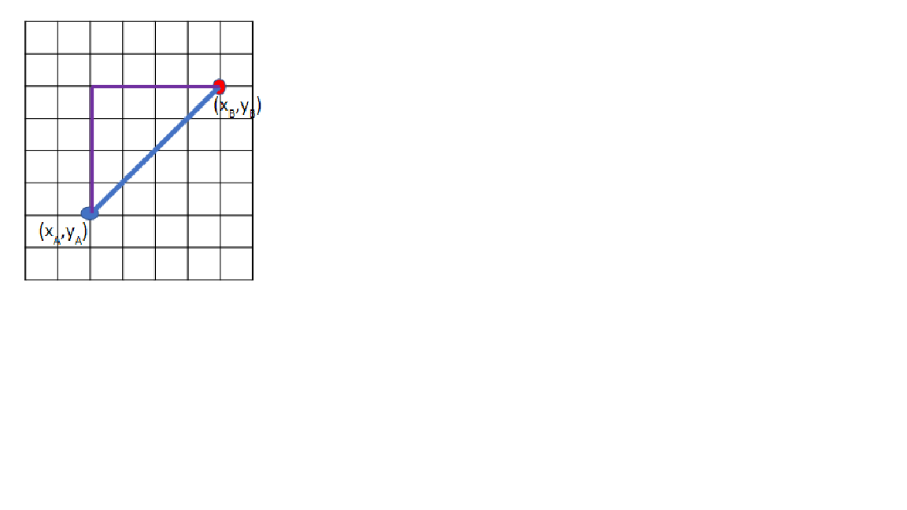

!pip install sympyAlgoritmi
Gli algoritmi sono il cuore pulsante dell’intelligenza artificiale e svolgono un ruolo cruciale nel trasformare i dati grezzi in informazioni utili. In questo capitolo, esploreremo vari tipi di algoritmi utilizzati nell’IA. Approfondiremo l’inferenza logica, probabilistica e bayesiana, nonché gli algoritmi di ricerca, equitativi e predittivi.
Inferenza Logica
definizione Treccani: inferenza logica sinonimo di «argomentazione logica» utilizzato per designare il processo di deduzione di una formula A, detta conclusione, a partire da una o più formule, dette premesse. Secondo A. De Morgan, una inferenza è la «produzione di una proposizione come conseguenza necessaria di una o più proposizioni».
L’inferenza logica è un processo fondamentale nel campo della logica, della matematica e della filosofia, utilizzato per derivare conclusioni a partire da premesse o informazioni date. Questo processo può essere visto come un mezzo per scoprire nuove verità o per confermare la validità di affermazioni esistenti. L’inferenza logica si suddivide principalmente in due categorie: deduttiva e induttiva.
L’inferenza deduttiva è quella in cui la conclusione deriva necessariamente dalle premesse; se le premesse sono vere, la conclusione non può che essere vera. Un classico esempio di inferenza deduttiva è il sillogismo: “Tutti gli uomini sono mortali; Socrate è un uomo; quindi, Socrate è mortale.” In questo caso, la verità delle premesse garantisce la verità della conclusione.
L’inferenza induttiva, invece, opera diversamente: partendo da osservazioni specifiche o da una serie di dati, arriva a conclusioni più generali, che non sono necessariamente certe ma probabili. Ad esempio, se si osserva che il sole è sorto ogni giorno, si potrebbe inferire che il sole sorgerà anche domani. Questa forma di inferenza è molto utilizzata nella scienza, dove gli scienziati formulano ipotesi basate su dati osservati e sperimentali.
Un altro tipo di inferenza logica è l’abduzione, che implica la formazione della migliore spiegazione possibile data un insieme di osservazioni. Questo tipo di inferenza è spesso utilizzato nella diagnosi medica, nella ricerca scientifica e nelle indagini criminali, dove si cerca di spiegare i dati osservati nel modo più coerente possibile.
L’inferenza logica è strettamente legata al concetto di validità e di correttezza degli argomenti. Un’argomentazione è valida se la sua struttura logica è tale che, qualora le premesse siano vere, anche la conclusione deve essere vera. Tuttavia, un’argomentazione può essere valida senza essere corretta; per essere corretta, deve avere anche premesse vere. Ad esempio, l’argomentazione “Tutti gli unicorni sono verdi; io possiedo un unicorno; quindi, il mio unicorno è verde” è valida dal punto di vista logico, ma non è corretta perché le premesse non sono vere.
L’inferenza logica è alla base di molti sistemi di intelligenza artificiale e di calcolo automatico, dove gli algoritmi vengono progettati per inferire nuove informazioni a partire da dati iniziali. Nei sistemi esperti, per esempio, vengono utilizzate regole di inferenza per simulare il processo decisionale umano. In conclusione, l’inferenza logica è uno strumento potente e versatile che permea molte aree del pensiero umano e della tecnologia, consentendo di avanzare nella conoscenza e nella comprensione del mondo che ci circonda. L’inferenza logica è una tecnica fondamentale dell’intelligenza artificiale che utilizza le regole logiche per derivare nuove informazioni da quelle esistenti. Nella giurisprudenza, l’inferenza logica può essere utilizzata per analizzare le leggi e determinare le conseguenze logiche delle azioni legali.
I sistemi esperti - Negli anni ’80, l’inferenza logica è stata fondamentale nello sviluppo dei sistemi esperti, strumenti avanzati di intelligenza artificiale progettati per risolvere problemi complessi emulando il ragionamento umano. Due noti prodotti commerciali di quel periodo sono stati MYCIN, un sistema esperto per la diagnosi di infezioni del sangue, e XCON, utilizzato per configurare sistemi di computer VAX di Digital Equipment Corporation. MYCIN e XCON sfruttavano regole di inferenza per elaborare informazioni e fornire raccomandazioni o soluzioni, dimostrando l’efficacia dell’inferenza logica in applicazioni pratiche e commerciali > - “Rule-based Expert Systems : The MYCIN Experiments of the Stanford Heuristic Programming Project”, edited by Bruce G. Buchanan, Edward H. Shortliffe (AddisonWesley, 1984) - “RI: an Expert in the Computer Systems Domain”
Proposizioni Logiche
Le proposizioni logiche sono dichiarazioni atomiche che possono essere valutate come vere o false. Le proposizioni possono essere combinate utilizzando operatori logici come AND, OR, NOT, IMPLIES, che permettono di costruire regole complesse rappresentate da formule logiche.
Ecco alcuni esempi di proposizioni logiche:
p: “Il sole è luminoso” (Vero) q: “La Luna è fatta di formaggio” (Falso) r: “Se piove, allora la strada sarà bagnata” (Condizionale)
Calcolo delle Proposizioni Logiche
Le proposizioni logiche possono essere manipolate utilizzando vari operatori logici che eseguono operazioni specifiche:
Congiunzione (AND - ∧): L’operatore AND restituisce vero solo quando entrambe le proposizioni coinvolte sono vere. Ad esempio, se abbiamo due proposizioni p e q, p ∧ q è vero solo se entrambe p e q sono vere. La cosidetta tabella di verità riportata qui sotto consente di vedere come funziona l’operatore AD.
| p | q | p ∧ q |
|---|---|---|
| False | False | False |
| False | True | False |
| True | False | False |
| True | True | True |
Disgiunzione (OR - ∨): L’operatore OR restituisce vero se almeno una delle due proposizioni coinvolte è vera. Ad esempio, p ∨ q è vero se p è vero oppure se q è vero oppure se entrambi sono veri. La tabella di verità riportata qui sotto consente di vedere come funziona l’operatore OR.
| p | q | p ∨ q |
|---|---|---|
| False | False | False |
| False | True | True |
| True | False | True |
| True | True | True |
Negazione (NOT - ¬): L’operatore NOT cambia il valore di verità di una proposizione. Ad esempio, ¬p è vero se p è falso e viceversa.
| p | ¬p |
|---|---|
| False | True |
| True | False |
Implicazione (→): L’implicazione è un’operazione logica che collega due proposizioni e stabilisce una relazione di condizionalità. Si rappresenta con il simbolo “→” e si legge come “se… allora”. In un’implicazione del tipo “p → q”, la proposizione p è chiamata l’antecedente e la proposizione q è il conseguente. L’implicazione è falsa solo nel caso in cui l’antecedente è vero e il conseguente è falso. In tutti gli altri casi, l’implicazione è considerata vera. Poiché questa operazione è alla base di molti algoritmi di inferenza, è importante capire come funziona. La tabella di verità riportata qui sotto consente di vedere come funziona l’operatore implicazione.
| p | q | p → q |
|---|---|---|
| False | False | True |
| False | True | True |
| True | False | False |
| True | True | True |
Esempio di Implicazione: supponiamo di avere le seguenti proposizioni: - p: Il sole splende. - q: Faccio una passeggiata.
L’implicazione che possiamo formulare è: “Se il sole splende, allora faccio una passeggiata”, che si scrive come “p → q”. Dalla tabella della verità, possiamo vedere che in tre dei quattro casi l’implicazione “p → q” è vera. L’unico caso in cui l’implicazione è falsa è quando il sole splende (p è vero) ma non faccio una passeggiata (q è falso).
Quindi, in base alla logica dell’implicazione, se il sole splende, sto effettivamente facendo una passeggiata o potrei anche non farla (ad eccezione del caso in cui il sole splenda e io non faccia una passeggiata, in cui l’implicazione è falsa).
Implicazione Bilaterale (↔︎): L’implicazione bilaterale è un’operazione logica che stabilisce che due proposizioni sono equivalenti, cioè che entrambe le proposizioni hanno lo stesso valore di verità. Si rappresenta con il simbolo “↔︎” e si legge come “se e solo se”. L’implicazione bilaterale è vera solo quando le proposizioni hanno lo stesso valore di verità, sia entrambe vere che entrambe false.
| p | q | p ↔︎ q |
|---|---|---|
| False | False | True |
| False | True | False |
| True | False | False |
| True | True | True |
L’implicazione bilaterale, anche conosciuta come “se e solo se”, è un importante concetto logico che stabilisce che due proposizioni sono logicamente equivalenti, cioè entrambe sono vere o entrambe sono false contemporaneamente.
Esempio di Implicazione Bilaterale: supponiamo di avere le seguenti proposizioni:
- p: Oggi è venerdì.
- q: Domani è sabato.
L’implicazione bilaterale tra p e q può essere scritta come p ↔︎ q, che si legge come “Oggi è venerdì se e solo se domani è sabato”.
Dalla tabella di verità, possiamo notare che l’implicazione bilaterale “Oggi è venerdì se e solo se domani è sabato” è vera solo nei casi in cui entrambe le proposizioni sono vere (primo e ultimo caso) o entrambe sono false. Se c’è una discrepanza nelle verità delle proposizioni, l’implicazione bilaterale diventa falsa (secondo e terzo caso).
Quindi, nel nostro esempio, l’affermazione “Oggi è venerdì se e solo se domani è sabato” è vera solo quando entrambe le proposizioni sono vere o entrambe sono false, evidenziando l’equivalenza logica tra le due proposizioni nel contesto dell’implicazione bilaterale.
Basi della Conoscenza
La base della conoscenza in un agente a inferenza logica è costituita da proposizioni logiche, che sono affermazioni dichiarative che possono essere vere o false. Le proposizioni possono essere atomiche o composte e sono spesso rappresentate utilizzando variabili proposizionali. Queste variabili assumono valori di verità (vero o falso) e vengono combinate tramite operatori logici per formare regole logiche complesse. La base della conoscenza in un sistema logico definisce le relazioni tra le proposizioni e fornisce le fondamenta per il ragionamento e l’inferenza. Un agente a inferenza logica usa la Base della Conoscenza per giungere a conclusioni circa il mondo che la circonda; Per fare ciò ha bisogno di regole di implicazione logica (⊨): Se α ⊨ β, ovvero se α implica logicamente β, in ogni mondo dove α è vera allora β è vera. È diversa dall’implicazione perché non è un connettivo logico ma una relazione che dice che se α è vera allora β è vera e basta!
Sistemi basati sulla conoscenza
I sistemi basati sulla conoscenza sono strumenti informatici progettati per emulare il processo decisionale umano attraverso l’utilizzo di una base di conoscenza strutturata. Questi sistemi raccolgono, organizzano e utilizzano informazioni specifiche di un dominio per risolvere problemi complessi che richiedono competenza specialistica. Una componente fondamentale è la base di conoscenza, che contiene fatti, regole ed euristiche rappresentative del sapere umano in un determinato campo. Il motore di inferenza è l’altro elemento chiave: applica regole logiche ai dati presenti nella base di conoscenza per dedurre nuove informazioni o prendere decisioni informate.

Il processo di creazione di un sistema esperto basato sull’inferenza logica inizia con l’acquisizione della conoscenza, dove gli esperti del dominio collaborano per estrarre informazioni e regole rilevanti. Queste conoscenze vengono poi formalizzate nella rappresentazione della conoscenza, utilizzando strutture come regole if-then, ontologie o reti semantiche, che alimentano la base di conoscenza. Il motore di inferenza viene sviluppato per applicare queste regole logiche ai dati forniti, deducendo nuove informazioni o prendendo decisioni informate. La gestione del sistema include l’aggiornamento continuo della base di conoscenza per riflettere nuove scoperte o cambiamenti nel dominio, nonché la verifica e la validazione del sistema per garantirne l’accuratezza e l’affidabilità. Gli utenti interagiscono con il sistema attraverso un’interfaccia che facilita l’inserimento dei dati e la visualizzazione dei risultati, permettendo anche il feedback per miglioramenti futuri.
Questi sistemi trovano applicazione in vari settori, come la medicina, l’ingegneria, la finanza e l’assistenza clienti. Ad esempio, in ambito medico, un sistema basato sulla conoscenza può aiutare nella diagnosi di malattie analizzando sintomi e storie cliniche dei pazienti. L’efficacia di tali sistemi dipende dalla qualità e dall’aggiornamento costante della base di conoscenza, nonché dalla capacità del motore di inferenza di elaborare correttamente le informazioni.
Un vantaggio significativo dei sistemi basati sulla conoscenza è la possibilità di conservare e diffondere l’esperienza di esperti, rendendola accessibile a un pubblico più ampio e contribuendo alla standardizzazione delle pratiche. Tuttavia, la creazione e la manutenzione di una base di conoscenza richiedono notevoli risorse e competenze. Con l’avanzamento dell’intelligenza artificiale e dell’apprendimento automatico, questi sistemi continuano a evolversi, integrando nuove tecniche per migliorare l’efficienza, l’accuratezza e la capacità di apprendimento autonomo nelle loro applicazioni.
Semplice Sistema Esperto in ambito penale
In questo paragrafo, useremo la libreria SymPy in Python per creare un semplice sistema esperto basato sull’inferenza logica nell’ambito del diritto penale. Questo sistema aiuterà a determinare se determinati comportamenti costituiscono un reato, in base ai fatti noti e alle norme applicabili. Si noti che la libreria SymPy è stata sviluppata per consentire il calcolo simbolico in Python. In questo caso useremo le funzionalità di calcolo simbolico per la rappresentazione della conoscenza, usando le funzionalità di calcolo logico, e per l’inferenza logica.

(click-ando su questo pulsante aprirete il quaderno all’interno di COLAB di Google dove potrete eseguire il quaderno online senza bisogno di avere un ambiente Python sulla vostra macchina.)
Introduzione
Il diritto penale si basa su norme che definiscono quali comportamenti sono considerati reati e quali elementi devono essere presenti affinché un’azione sia punibile. Un sistema esperto in questo contesto può aiutare a:
- Valutare se un’azione specifica costituisce un reato.
- Identificare gli elementi costitutivi del reato.
- Fornire una base logica per decisioni legali.
Utilizzeremo SymPy per modellare proposizioni logiche, regole legali e per effettuare inferenze.
Installazione di SymPy
Assicurati di avere SymPy installato:
pip install sympySe stai utilizzando questo notebook in un ambiente in cui SymPy non è installato, esegui la seguente cella:
Concetti di Base nel Diritto Penale
Prima di iniziare, definiamo alcuni concetti chiave:
- Fatti: Eventi o azioni specifiche accadute.
- Reati: Comportamenti definiti come illeciti dalla legge penale.
- Elementi Costitutivi del Reato: Condizioni che devono essere soddisfatte perché un comportamento sia considerato un reato (ad esempio, azione, intenzione, nesso causale).
- Regole Legali: Norme che stabiliscono le condizioni in cui un comportamento è punibile.
Modellazione con SymPy
Passo 1: Importare i Moduli Necessari
Importiamo i moduli necessari da SymPy per lavorare con la logica proposizionale.
from sympy import symbols
from sympy.logic.boolalg import And, Or, Not, Implies, Equivalent
from sympy.logic.inference import satisfiablePasso 2: Definire le Proposizioni Logiche
Definiamo le variabili che rappresentano i fatti e gli elementi costitutivi del reato.
# Fatti
Azione, Intenzione, NessoCausale = symbols('Azione Intenzione NessoCausale')
# Reato
Omicidio = symbols('Omicidio')Passo 3: Definire le Regole che discendono dal Codice Penale
Ad esempio, secondo il codice penale, l’omicidio richiede:
- Azione: Causare la morte di una persona.
- Intenzione: Volontà di causare la morte (dolo).
- Nesso Causale: La morte è conseguenza dell’azione.
Definiamo la regola:
# Regola: Se c'è Azione, Intenzione e Nesso Causale, allora si configura l'Omicidio
regola_omicidio = Implies(And(Azione, Intenzione, NessoCausale), Omicidio)Passo 4: Definire i Fatti Noti
Supponiamo di avere i seguenti fatti:
- Una persona ha compiuto un’azione che ha causato la morte di un’altra.
- Aveva l’intenzione di causare la morte.
- Esiste un nesso causale tra l’azione e la morte.
# Fatti noti
fatto1 = Azione # L'azione di causare la morte
fatto2 = Intenzione # Intenzione di causare la morte
fatto3 = NessoCausale # La morte è conseguenza dell'azionePasso 5: Creare la Base di Conoscenza
Combiniamo fatti e regole:
# Base di conoscenza
base_conoscenza = And(fatto1, fatto2, fatto3, regola_omicidio)Passo 6: Inferenza Logica
Verifichiamo se, sulla base dei fatti e delle regole, possiamo concludere che si tratta di omicidio.
# Verifichiamo se Omicidio è deducibile
ipotesi = And(base_conoscenza, Not(Omicidio))
risultato = satisfiable(ipotesi)
if not risultato:
print("Si configura il reato di omicidio.")
else:
print("Non possiamo concludere che si tratti di omicidio.")Si configura il reato di omicidio.Output atteso:
Si configura il reato di omicidio.Espansione del Sistema
Caso con Mancanza di Intenzione
Supponiamo che l’intenzione non sia presente (ad esempio, si tratta di omicidio colposo).
# Fatti noti senza Intenzione
fatto1 = Azione
fatto2 = Not(Intenzione) # Mancanza di intenzione
fatto3 = NessoCausale
# Base di conoscenza aggiornata
base_conoscenza = And(fatto1, fatto2, fatto3, regola_omicidio)Inferenza per Omicidio
# Inferenza
ipotesi = And(base_conoscenza, Not(Omicidio))
risultato = satisfiable(ipotesi)
if not risultato:
print("Si configura il reato di omicidio.")
else:
print("Non possiamo concludere che si tratti di omicidio.")Non possiamo concludere che si tratti di omicidio.Output atteso:
Non possiamo concludere che si tratti di omicidio.Aggiunta di Altre Regole
Aggiungiamo la regola per l’omicidio colposo:
# Definizione del reato di Omicidio Colposo
OmicidioColposo = symbols('OmicidioColposo')
# Regola per Omicidio Colposo: Azione e Nesso Causale senza Intenzione
regola_omicidio_colposo = Implies(And(Azione, Not(Intenzione), NessoCausale), OmicidioColposo)
# Aggiorniamo la base di conoscenza
base_conoscenza = And(fatto1, fatto2, fatto3, regola_omicidio, regola_omicidio_colposo)Inferenza per Omicidio Colposo
# Verifichiamo se si configura l'Omicidio Colposo
ipotesi = And(base_conoscenza, Not(OmicidioColposo))
risultato = satisfiable(ipotesi)
if not risultato:
print("Si configura il reato di omicidio colposo.")
else:
print("Non possiamo concludere che si tratti di omicidio colposo.")Si configura il reato di omicidio colposo.Output atteso:
Si configura il reato di omicidio colposo.Conclusione
Abbiamo visto come utilizzare SymPy per modellare un semplice sistema esperto nel campo del diritto penale. Questo esempio illustra come le regole legali e i fatti possono essere formalizzati utilizzando la logica proposizionale, permettendo al sistema di effettuare inferenze logiche.
Ricorda che questo è un modello semplificato e che il diritto penale è complesso e richiede una comprensione approfondita per essere modellato accuratamente. Questo sistema può essere un punto di partenza per sviluppi più avanzati e per esplorare l’intersezione tra intelligenza artificiale e diritto.
Inferenza Probabilistica
L’inferenza probabilistica utilizza la teoria delle probabilità per fare previsioni o inferenze basate su dati incompleti o incerti. Questo tipo di inferenza è particolarmente utile in tutti i contesti dove le informazioni possono essere incomplete o incerte.
L’agente artificiale in situazioni di incertezza affronta la sfida di prendere decisioni razionali quando non si dispone di informazioni complete o quando le informazioni disponibili sono soggette a variabilità. In tali contesti, l’agente deve essere in grado di gestire e interpretare l’incertezza in modo efficace per agire in modo intelligente e adattivo.
L’incertezza può derivare da diversi fattori, come la natura incompleta delle informazioni, la presenza di rumore nei dati, l’aleatorietà degli eventi o la complessità dei problemi da affrontare. Gli agenti artificiali, dotati di capacità di ragionamento probabilistico e di inferenza, sono in grado di valutare le conseguenze di diverse azioni in base alle probabilità associate agli eventi futuri e agli esiti attesi.
L’inferenza probabilistica è una tecnica utilizzata nell’ambito dell’Intelligenza Artificiale per prendere decisioni o formulare previsioni basate su informazioni incerte o parziali. In pratica, ciò significa che invece di avere risposte binarie (vero o falso), lavoriamo con probabilità, cioè con il grado di certezza o incertezza riguardo a una determinata affermazione o evento.
Esempio in un contesto legale
Immagina un caso giuridico in cui una persona è accusata di un crimine. Nel sistema giuridico, la giuria deve prendere una decisione sulla colpevolezza o innocenza dell’imputato. Tuttavia, spesso non abbiamo prove definitive o testimonianze che garantiscono una certezza assoluta. In questo contesto, l’inferenza probabilistica può essere applicata. Invece di dire semplicemente “colpevole” o “innocente,” i giurati possono assegnare una probabilità alla colpevolezza dell’imputato. Ad esempio, potrebbero dire che ci sono il 70% di probabilità che l’imputato sia colpevole e il 30% di probabilità che sia innocente. Infine, una soglia sulla probabilità di colpevolezza potrebbe dare origine alla sentenza.
Esempio in un generico contesto di diagnosi
Nel caso di una diagnosi ( in qualunque settore) è necessario prendere una decisione con conoscenza incerta. Si è in una situazione di incertezza in quanto la lista di situazioni e cause da descrivere non può essere esaustiva (praticamente infinita per la mancanza di conoscenza universale). Non si può usare la logica del primo ordine per gestire la diagnosi perché: - è impossibile elencare l’insieme praticamente infinito di antecedenti e conseguenti per evitare eccezioni - è impossibile avere una conoscenza metodologica completa - è impossibile avere una conoscenza applicativa completa - L’agente non potrà mai agire con una piena consapevolezza di verità e correttezza, avrà solo un grado di credenza sulla bontà delle azioni da intraprendere e dei risultati.
Inferenza probabilistica e La teoria delle probabilità
L’inferenza probabilistica è un processo di ragionamento che utilizza il calcolo delle probabilità per prendere decisioni o formulare previsioni in situazioni in cui le informazioni sono incomplete o incerte. L’inferenza probabilistica è fondamentale in vari campi, come la statistica, l’apprendimento automatico, la medicina, la finanza e molti altri.
Il calcolo delle probabilità è una branca della matematica che si occupa di misurare e analizzare la probabilità di eventi casuali. La probabilità è una misura numerica che descrive la possibilità che un evento specifico accada.
“Il concetto di probabilità è il più importante della scienza moderna, soprattutto perché nessuno ha la più pallida idea del suo significato.” (Bertrand Russel)
La teoria della probabilità assume la stessa assunzione ontologica della logica: - i fatti del mondo sono: veri o falsi (con una certa probabilità) - Ogni possibile situazione in cui si trova il nostro agente è un mondo µ; Esempio: nel caso del gioco del Lotto, per la singola estrazione ci possono essere 90 mondi, uno per ogni numero che può essere estratto. - Ogni mondo µ è un insieme di fatti: - fatti veri (V) - fatti falsi (F) - fatti incerti (I)
Tale teoria può essere formulata in diversi modi a seconda del tipo di assunzioni iniziali che si utilizzano. In questo testo si utilizza la teoria della probabilità basata sui cosiddetti assiomi di Kolmogorov e per questo detta Teoria Assiomatica della Probabilità.
Gli assiomi di Kolmogorov costituiscono la base matematica della teoria delle probabilità, formulata dal matematico russo Andrey Kolmogorov nel suo lavoro “Grundbegriffe der Wahrscheinlichkeitsrechnung” nel 1933.
Ecco una descrizione dei tre assiomi di Kolmogorov:
Primo Assioma (Non-negatività): La probabilità di un evento è sempre un numero reale non negativo: P(A)≥0 per ogni evento A. Per rappresentare la probabilità di un certo mondo si usa il simbolo P(µ), 0 <= P(µ) <= 1
- P(µ) = 0 significa che il mondo µ non ha nessuna possibilità di verificarsi. Ad esempio la probabilità che al lotto venga estratto il numero 0 (zero)
- P(µ) = 1 significa che il mondo µ è certo. Ad esempio la probabilità che il risultato di una estrazione sia minore o uguale a 90 è 1 Più è «grande» P(µ) è più è verosimile che si verifichi il mondo µ.
Secondo Assioma (Normalizzazione) : La somma delle probabilità di tutti gli eventi possibili nello spazio campione è uguale a 1: P(S) = 1, dove S rappresenta lo spazio campione. Ad esempio, la somma delle probabilità di estrazione di tutti i numeri del lotto è pari a 1
Terzo Assioma (Additività) : Se A1, A2, A3, … sono eventi mutuamente esclusivi (cioè non possono accadere simultaneamente), allora la probabilità dell’unione di questi eventi è uguale alla somma delle loro probabilità individuarie: P(A1 ∪ A2 ∪ A3 ∪ …) = P(A1) + P(A2) + P(A3) + … Ad esempio, la probabilità di estrarre un numero pari al lotto è pari alla somma delle probabilità di estrarre i numeri pari da 2 a 90.
Gli assiomi di Kolmogorov forniscono un fondamento rigoroso per definire le probabilità e garantiscono che le probabilità siano consistenti e soddisfino le proprietà chiave della teoria delle probabilità. Questi assiomi sono essenziali per lo studio formale della probabilità e vengono utilizzati per sviluppare e applicare concetti probabilistici in varie discipline, inclusi statistica, teoria dei giochi, intelligenza artificiale e molti altri campi scientifici.
Cacolo della probabilità incondizionata o a priori
calcolo della probabilità di estrazione di un numero x al lotto Usando i tre assiomi di Kolmogorov :
si può calcolare la probabilità di estrazione di un numero x al lotto. - Dal primo assionmato si ha che P(x) >= 0. - Dal secondo assioma si ha che la somma di tutti i P(x), con x che va da 1 a 90, è pari a 1. - Dal terzo si evince che essendo le probabilità di estrazione di un numero x uguale a quella di estrarre un numero y, con x diverso da y, si ha che la probabilità di estrarre un numero x è pari a 1/90.
calcolo della probabilità del risultato x nel lancio di un dado Nel lancio di un dado a 6 facce:
la probabilità P(n) di ottenere il numero n è P(n) = 1/6 perché all’esito del lancio tutte le facce del dado hanno uguale probabilità.
calcolo della probabilità del risultato nel lancio di due dadi : Nell’esito del lancio di due dadi, dobbiamo considerare che i mondi possibili ed equiprobabili sono 6x6=36 e quindi la probabilità di uno di questi mondi è 1/36.
calcolo della probabilità del risultato x come somma dei valori nel lancio di due dadi : Nell’esito del lancio di due dadi, se vogliamo calcolare la probabilità che esca un certo valore x come somma dei valori dei due dadi dobbaimo considerare che i valori possibili di x [2,12] non sono equiprobabili. Infatti, per esempio, la probabilità di ottenere 2 è 1/36, mentre la probabilità di ottenere 7 è 6/36. Per calcolare la probabilità del valore x è sufficiente contare quanti sono i mondi in cui il valore x si ottiene come somma dei valori dei due dadi e poi dividere per il numero totale di mondi possibili. I possibili risultati del lancio di due dadi sono 36 :
| + | 1 | 2 | 3 | 4 | 5 | 6 |
|---|---|---|---|---|---|---|
| 1 | 2 | 3 | 4 | 5 | 6 | 7 |
| 2 | 3 | 4 | 5 | 6 | 7 | 8 |
| 3 | 4 | 5 | 6 | 7 | 8 | 9 |
| 4 | 5 | 6 | 7 | 8 | 9 | 10 |
| 5 | 6 | 7 | 8 | 9 | 10 | 11 |
| 6 | 7 | 8 | 9 | 10 | 11 | 12 |
La probabilità di ottenere 2 è data dal numero di esiti favorevoli al risultato 2, in questo caso è solo uno, diviso il numero totale di esiti possibili, in questo caso 36. La possibilità di ottenere 3 è data dal numero di esiti favorevoli al risultato 3, in questo caso sono 2, diviso il numero totale di esiti possibili, in questo caso 36. …
P(2)=1/36, P(3)=2/36, P(4)=3/36, P(5)=4/36, P(6)=5/36, P(7)=6/36, P(8)=5/36, P(9)=4/36, P(10)=3/36, P(11)=2/36, P(12)=1/36
Variabili aleatorie
Una variabile aleatoria nel calcolo delle probabilità è una variabile che può assumere uno dei possibili valori in un certo dominio: - La variabile lancio nel lancio di un dado può assumere uno dei valori nel dominio {1,2,3,4,5,6} - La variabile sentenza nel processo penale può assumere uno dei valori nel dominio {«Non luogo a procedere», «Proscioglimento», «Condanna»} - La variabile diagnosi in campo medico può assumere uno dei valori nel dominio {«Malattia», «Non malattia»}.
Nell’inferenza probsbilistica si è interessati alla probabilità che una certa variabile aleatoria assuma un certo valore. Ad esempio, in un determinato processo penale si potrebbe avere:
- P(sentenza = «Non luogo a procedere») = 0,1
- P(sentenza = «Proscioglimento») = 0,1
- P(sentenza = «Condanna») = 0,8
Per codificare la variabile aleatoria “sentenza” in Python, si può utilizzare ad esempio la struttura dati dizionario che mappa i possibili esiti (“Non luogo a procedere”, “Proscioglimento”, “Condanna”) ai rispettivi valori numerici di probabilità. Ecco un esempio di come si potrebbe codificare la variabile aleatoria “sentenza” in Python utilizzando un dizionario:
# Definizione della variabile aleatoria sentenza con i suoi possibili valori
sentenza = {
"Non luogo a procedere": 0.128, # probabilità del 12.8% di non luogo a procedere
"Proscioglimento": 0.548, # probabilità del 54.8% di proscioglimento
"Condanna": 0.324 # probabilità del 32.4% di condanna
}
somma = 0
for esito, probabilita in sentenza.items():
print(f"La probabilità di '{esito}' è: {probabilita}")
somma = somma + probabilita
print(" la somma delle probabilità è pari a ", somma)La probabilità di 'Non luogo a procedere' è: 0.128
La probabilità di 'Proscioglimento' è: 0.548
La probabilità di 'Condanna' è: 0.324
la somma delle probabilità è pari a 1.0Distribuzioni di probabilità
le distribuzioni di probabilità sono funzioni che descrivono la probabilità di ogni possibile valore di una variabile aleatoria. Ad esempio, la distribuzione di probabilità della variabile aleatoria “sentenza” nel processo penale può essere rappresentata come segue: P(sentenza) = {0.1, 0.1, 0.8}. Nel seguito vedremo alcune distribuzioni di probabilità notevoli.
Probabilità congiunta
La probabilità congiunta è la probabilità che due eventi si verifichino contemporaneamente. Ad esempio, la probabilità che un processo penale porti a una condanna e che il condannato sia colpevole è data dalla probabilità congiunta di questi due eventi. Oppure, in ambito medico, la probabilità che un paziente abbia una certa patologia e che il test diagnostico sia positivo è data dalla probabilità congiunta di questi due eventi. Oppure, in ambito metereologico, la probabilità che sia nuvolo e che piova è la probabilità congiunta di questi due eventi:
probabilità che sia nuvoloso:
| nuvoloso | ¬nuvoloso | |
|---|---|---|
| P(n) | 0,7 | 0,3 |
probabilità che piova:
| piove | ¬piove | |
|---|---|---|
| P(p) | 0,2 | 0,8 |
probabilità che sia nuvoloso e piova: | P(p,n) | nuvoloso | ¬nuvoloso | | :-: | :-: | :-: | | piove | 0,55 | 0,05 | | ¬piove | 0,15 | 0,25 |
Indipendenza delle variabili aleatorie
L’indipendenza di due eventi indica che il verificarsi di uno non influenza il verificarsi dell’altro. Ad esempio: Lancio di due dadi. Il lancio del primo non influenza il secondo; Il contrario, la dipendenza, indica che il verificarsi di uno influenza il verificarsi dell’altro. Nel caso in cui due variabili aleatorie siano indipendenti si ha la seguente proprietà:
P(a “∧” b)=P(a)*P(b)
Negazione
La negazione di un evento è l’evento che si verifica quando l’evento originale non si verifica. Ad esempio, la negazione dell’evento “piove” è “non piove”.
Se la probabilità che un evento è α, la probabilità che l’evento non si verifichi è 1 - α.
P(A) = α, allora P(¬A) = 1 - α
Inclusione
P(a ∨ b) = P(a) + P(b) - P(a ∧ b).
La probabilità che si verifichi l’evento a o l’evento b è uguale alla somma delle probabilità dei due eventi meno la probabilità congiunta. Si noti che se gli eventi sono incompatibili la probabilità congiunta è nulla! image-2.png
Marginalizzazione
La marginalizzazione è una tecnica utilizzata per calcolare la probabilità di un evento dato un insieme di eventi. Ad esempio, la probabilità che un processo penale porti a una condanna dato che il condannato è colpevole è data dalla marginalizzazione della probabilità congiunta di questi due eventi.
P(a) = P(a, b) + P(a, ¬b).
La probabilità che si verifichi b è disgiunta dalla probabilità che si verifichi ¬b. Quindi, quando si verifica a si ha b oppure ¬b ma non entrambi quindi se sommo le probabilità P(a, b) + P(a, ¬b) ottengo P(a)
probabilità condizionata
La probabilità condizionata è la probabilità che un evento si verifichi dato che un altro evento si è verificato. Ad esempio, la probabilità che un processo penale porti a una condanna dato che il sottoposto a giudizio è colpevole è data dalla probabilità condizionata di questi due eventi.
E’ possibile fare inferenze a proposito della probabilità di una proposizione ignota A, data la prova B, calcolando P(A/B) (probabilità di A dato che tutto ciò che sappiamo è B) (inferenza probabilistica)
Un’interrogazione ad un sistema di ragionamento probabilistico chiederà di calcolare il valore di una particolare probabilità condizionata.
Fin qui abbiamo visto casi in cui il singolo evento non era condizionato da altro evento:
- Prima estrazione del lotto;
- Lancio di uno o due dadi
- Cosa succede alla probabilità quando l’avverarsi di una proposizione è condizionata all’avverarsi di un’altra proposizione?
P(a|b) = probabilità dell’evento a dato che noi sappiamo che l’evento b si è verificato. Oppure, “ la probabilità di a dato b” Possiamo chiederci:
- Qual’è la probabilità che vinca la “ Roma” se ha vinto la “ Lazio”?, P(Roma/Lazio).
- Qual’è la probabilità che arrivi il “38” se è arrivato il “52”?”, P(“38”/”52”).
La formula per calcolare la probabilità condizionata di a dato b è la seguente: \[ P(a/b) =(𝑃(𝑎 ∧ 𝑏) )/(𝑃(𝑏)); \] “siamo interessati agli eventi dove a e b sono vere, ma solo nei mondi dove b è vera!” \[ P(a ∧ b)=P(b)P(a/b) \] \[ P(a ∧ b)=P(b)P(a/b) \]
calcolo della probabilità condizionata: lancio di due dadi
Qual è la probabilità che si ottenga una somma pari 9 lanciando due dadi se il primo dado è 6, P(9/6)? La risposta si ottiene direttamente dalla formula della probabilità condizionata e da quella della probabilità congiunta: p(9/6) = P(9 ∧ 6) / P(6) = 1/36 / 1/6 = 1/6
La proposizione a = «somma=9» si verifica con i seguenti lanci:
a = {(6,3),(5,4),(4,5),(3,6)} P(a) = 4/36
La proposizione b = «primo dado=6» si verifica con i seguenti lanci:
b = {(6,1),(6,2),(6,3),(6,4),(6,5),(6,6)} P(b) = 6/36
a “∧” b = {(6,3)} P(a “∧” b) = 1/36
P(a/b) =(𝑃(𝑎 “∧” 𝑏) )/(𝑃(𝑏))= (1/36)/(6/36)=1/6
| + | 1 | 2 | 3 | 4 | 5 | 6 |
|---|---|---|---|---|---|---|
| 1 | 2 | 3 | 4 | 5 | 6 | 7 |
| 2 | 3 | 4 | 5 | 6 | 7 | 8 |
| 3 | 4 | 5 | 6 | 7 | 8 | 9 |
| 4 | 5 | 6 | 7 | 8 | 9 | 10 |
| 5 | 6 | 7 | 8 | 9 | 10 | 11 |
| 6 | 7 | 8 | 9 | 10 | 11 | 12 |
Ovvero, per risolvere l’esercizio dobbiamo osservare l’ ultima riga della tabella realtiva al lancio del primo dado con risultato 6. i casi favorevoli sono solo 1, mentre i casi possibili sono 6. Quindi la probabilità è 1/6.
calcolo della probabilità condizionata: caso penale
Supponiamo di avere un dataset di 1.000 casi penali. Per ogni caso, raccogliamo le seguenti informazioni:
- Alibi del sospettato (Sì/No)
- Testimone oculare presente (Sì/No)
- Condanna del sospettato (Sì/No)
| Alibi | Testimone Oculare | Condanna | Numero di Casi |
|---|---|---|---|
| Sì | Sì | Sì | 50 |
| Sì | Sì | No | 20 |
| Sì | No | Sì | 30 |
| Sì | No | No | 100 |
| No | Sì | Sì | 200 |
| No | Sì | No | 50 |
| No | No | Sì | 150 |
| No | No | No | 400 |
| totale | - | - | 1.000 |
Questo dataset può essere utilizzato per calcolare varie probabilità condizionate.
Esercizio 2.1: Probabilità di condanna dato che il sospettato non ha un alibi e c’è un testimone oculare.
- Formula: \(P(\text{Condanna} = \text{Sì} \mid \text{Alibi} = \text{No}, \text{Testimone} = \text{Sì})\)
- Calcolo:
- Numero di casi con Alibi = No, Testimone = Sì, Condanna = Sì: 200
- Numero totale di casi con Alibi = No, Testimone = Sì: 200 + 50 = 250
- \(P = \frac{200}{250} = 0{,}8 (80\%)\)
Esercizio 2.2: Probabilità che ci sia un testimone oculare dato che il sospettato è stato condannato.
- Formula: \(P(\text{Testimone} = \text{Sì} \mid \text{Condanna} = \text{Sì})\)
- Calcolo:
- Numero di casi con Testimone = Sì, Condanna = Sì: \(50 + 200 = 250\)
- Numero totale di casi con Condanna = Sì: \(50 + 30 + 200 + 150 = 430\)
- \(P = \frac{250}{430} \approx 0{,}581 (58,1\%)\)
Esercizio 2.3: Probabilità che un sospettato non abbia un alibi dato che non è stato condannato.
- Formula: $P( = = ) $
- Calcolo:
- Numero di casi con Alibi = No, Condanna = No: 50 + 400 = 450
- Numero totale di casi con Condanna = No: 20 + 100 + 50 + 400 = 570
- \(P = \frac{450}{570} \approx 0{,}789 (78,9\%)\)
Questo dataset consente di esplorare come diverse variabili influenzino le probabilità di determinati esiti nel contesto del diritto penale. Può essere utilizzato per analisi statistiche, studi accademici o simulazioni di casi giudiziari.
Condizionamento
\[ P(a) = P(a/b)P(b) + P(a/¬b)P(¬b). \] Il condizionamento discende immediatamente dalla marginalizzazione. La probabilità che si verifichi a è data dalla marginalizzazione della probabilità congiunta di questi due eventi. La probabilità che si verifichi b è disgiunta dalla probabilità che si verifichi ¬b. Quindi, quando si verifica a si ha b oppure ¬b ma non entrambi quindi se sommo le probabilità P(a, b) + P(a, ¬b) ottengo P(a).
Vediamo due esempi di applicazioni della formula di condizionamento in Python, uno nel campo medico e uno nel campo giuridico penale:
Campo medico Supponiamo di avere le seguenti informazioni:
La probabilità che una persona sviluppi un certo effetto collaterale a seguito di un farmaco è \(P(Effetto collaterale) = 0.2\).
Si sa che se una persona sviluppa l’effetto collaterale, la probabilità che abbia assunto il farmaco è \(P(Farmaco|Effetto collaterale) = 0.9\). D’altra parte, se una persona non mostra l’effetto collaterale, la probabilità che abbia comunque assunto il farmaco è \(P(Farmaco|¬Effetto collaterale) = 0.1\). In questo caso, il condizionamento riguarda la probabilità di assunzione del farmaco date le informazioni sull’effetto collaterale senza coinvolgere il teorema di Bayes.
Quindi, la probabilità di assunzione del farmaco è \[ P(Farmaco) = P(Farmaco|Effetto collaterale)P(Effetto collaterale) + P(Farmaco|¬Effetto collaterale)P(¬Effetto collaterale). \]
la codifica in Python è la seguente:
#definizioni delle probaibilità
P_effetto_collaterale = 0.2
P_farmaco_effetto_collaterale = 0.9
P_farmaco_non_effetto_collaterale = 0.1
P_farmaco = P_farmaco_effetto_collaterale * P_effetto_collaterale + P_farmaco_non_effetto_collaterale * (1 - P_effetto_collaterale)
print(f"La probabilità che una pesona abbia assunto il farmaco è : {P_farmaco}")Output atteso :
La probabilità che una pesona abbia assunto il farmaco è : 0.26Campo Giuridico Penale :
Immaginiamo di avere le seguenti informazioni in un contesto giuridico penale: $P(Condanna con prove schiaccianti) = 0.95 $
\(P(Condanna senza prove schiaccianti) = 0.2\)
\(P(Prove schiaccianti) = 0.3\)
Utilizziamo la formula di condizionamento per calcolare la probabilità di condanna:
\[ P(Condanna) = P(Condanna con prove schiaccianti)P(Prove schiaccianti) + P(Condanna senza prove schiaccianti)(1-P(Prove schiaccianti)) \]
La codifica in Python è la seguente:
prob_condanna_prove_schiaccianti = 0.95
prob_condanna_no_prove_schiaccianti = 0.2
prob_prove_schiaccianti = 0.3
prob_condanna = prob_condanna_prove_schiaccianti * prob_prove_schiaccianti + prob_condanna_no_prove_schiaccianti * (1 - prob_prove_schiaccianti)
print(f"La probabilità che un imputato sia colpevole dato che ci sono prove schiaccianti è: {prob_condanna}")La probabilità che un imputato sia colpevole dato che ci sono prove schiaccianti è: 0.42499999999999993Output atteso :
La probabilità che un imputato sia colpevole dato che ci sono prove schiaccianti è: 0.42499999999999993Questi due esempi illustrano come la formula di condizionamento possa essere applicata in contesti medici e giuridici penali per calcolare probabilità condizionate basate su informazioni specifiche relative agli eventi considerati.
Inferenza Bayesiana
“Mr. Bayes … design … was to find out a method by which we might judge concerning the probability that an event has to happen, in given circumstances, upon supposition that we know nothing concerning it but that, under the same circumstances, it has happened a certain number of times, and failed a certain other number of times.” - (Richard Price, presentando lo scritto dell’amico Thomas Bayes alla Royal Society of London)
Il Teorema di Bayes, formalizzato dal reverendo Thomas Bayes nel XVIII secolo, è uno strumento fondamentale nell’ambito della statistica e dell’intelligenza artificiale che permette di aggiornare le nostre credenze riguardo ad un’ipotesi sulla base di nuove evidenze. Le tecniche di inferenza basate su questo teorema sono ampiamente utilizzate in diversi campi, dall’analisi dei dati alla diagnostica medica, dalla finanza alla progettazione di algoritmi di machine learning.
Il Teorema di Bayes
Il Teorema di Bayes fornisce un modo per calcolare la probabilità condizionata di un’ipotesi data l’evidenza osservata. Formalmente, il teorema può essere espresso come:
\[ P(A|B) = \frac{P(B|A) \cdot P(A)}{P(B)} \]
Dove: - P(A|B) è la probabilità dell’ipotesi A dato l’evidenza B. - P(B|A) è la probabilità dell’evidenza B dato l’ipotesi A. - P(A) è la probabilità a priori dell’ipotesi A. - P(B) è la probabilità dell’evidenza B.
Applicazioni Pratiche
Diagnostica Medica
Nel campo della diagnostica medica, il Teorema di Bayes è utilizzato per valutare la probabilità che un paziente abbia una certa malattia sulla base dei sintomi presentati e dei risultati dei test di laboratorio. Ad esempio, se la probabilità di un test positivo dato che il paziente ha la malattia e la probabilità che il paziente abbia effettivamente la malattia sono note, il teorema di Bayes può essere impiegato per calcolare la probabilità che il paziente abbia la malattia date le informazioni disponibili.
Finanza
Nel settore finanziario, il Teorema di Bayes viene adoperato per valutare il rischio e formulare previsioni basate su dati storici e informazioni di mercato. Ad esempio, il teorema può essere utilizzato per stimare la probabilità di un evento futuro, come un aumento dei tassi di interesse, sulla base di indicatori economici attuali.
Machine Learning
Nei modelli di machine learning, come le reti bayesiane, il Teorema di Bayes svolge un ruolo chiave nell’aggiornare le probabilità delle variabili all’interno del modello in risposta ai nuovi dati. Questo processo di apprendimento bayesiano consente ai modelli di essere più flessibili ed adattabili all’evoluzione dei dati nel tempo.
diritto penale
Dalle statistiche (false perché inventate da me :) di un certo tribunale o dal Ministero della Giustizia abbiamo che - 80% degli imputati condannati hanno precedenti penali P(precedenti/condanna) = 0,8; - 10% degli imputati sono condannati P(condanna) = 0,1 - 20% degli imputati hanno precedenti penali P(precedenti) = 0,2
Applicando il teorema di Bayes abbiamo che la probabilità che un imputato con precedenti sia condannato è \[ P(condanna/precedenti) = P(condanna) \cdot \frac{P(precedenti/condanna)}{P(precedenti)} = 0,1 \cdot \frac{0,8}{0,2}= 0,4 \]
Si osservi che la probabilità di essere condannati era del 10%. Applicando il teorema di Bayes abbiamo scoperto che la probabilità di essere condannato è del 40% se sappiamo che la persona sottoposta a giudizio ha dei precedenti penali. Ovvero, la probabilità iniziale di essere condannati senza sapere se sono presenti o meno precedenti penali viene moltiplicata per 4 (il cosidetto fattore di Bayes).
Le tecniche di inferenza basate sul Teorema di Bayes forniscono un approccio potente per il ragionamento probabilistico e l’aggiornamento delle credenze in base alle evidenze disponibili. Utilizzate in una vasta gamma di settori, queste tecniche consentono di prendere decisioni informate e di sfruttare al meglio le informazioni a disposizione. La comprensione e l’applicazione corretta del Teorema di Bayes sono cruciali per ottenere risultati accurati e significativi nelle analisi statistiche e nel machine learning.
Applicazione del Teorema di Bayes: caso penale
Applicazione del teorema di Bayes al data set del caso pratico sec-CPC-caso-penale il Teorema di Bayes per calcolare la probabilità che un sospettato venga condannato dato che non ha un alibi, cioè \(P(\text{Condanna} = \text{Sì} \mid \text{Alibi} = \text{No})\). Questo ci permette di comprendere meglio l’impatto dell’assenza di un alibi sulla probabilità di condanna.
Obiettivo: Calcolare \(P(\text{Condanna} = \text{Sì} \mid \text{Alibi} = \text{No})\).
Teorema di Bayes:
\[ P(\text{Condanna} = \text{Sì} \mid \text{Alibi} = \text{No}) = \frac{P(\text{Alibi} = \text{No} \mid \text{Condanna} = \text{Sì}) \times P(\text{Condanna} = \text{Sì})}{P(\text{Alibi} = \text{No})} \]
Passo 1: Calcolare \(P(\text{Alibi} = \text{No} \mid \text{Condanna} = \text{Sì})\)
Numero totale di casi con Condanna = Sì:
\(50 + 30 + 200 + 150 = 430\) casi.Numero di casi con Alibi = No e Condanna = Sì:
\(200 + 150 = 350\) casi.Calcolo:
\[ P(\text{Alibi} = \text{No} \mid \text{Condanna} = \text{Sì}) = \frac{350}{430} \approx 0{,}8139 \ (81{,}39\%) \]
Passo 2: Calcolare $ P( = )$
Numero totale di casi con Condanna = Sì: $ 430 $ (come sopra).
Numero totale di casi: \(1.000\).
Calcolo:
\[ P(\text{Condanna} = \text{Sì}) = \frac{430}{1.000} = 0{,}43 \ (43\%) \]
Passo 3: Calcolare \(P(\text{Alibi} = \text{No})\)
Numero totale di casi con Alibi = No:
\(200 + 50 + 150 + 400 = 800\) casi.Numero totale di casi: \(1.000\).
Calcolo:
\[ P(\text{Alibi} = \text{No}) = \frac{800}{1.000} = 0{,}8 \ (80\%) \]
Passo 4: Applicare il Teorema di Bayes
\[ P(\text{Condanna} = \text{Sì} \mid \text{Alibi} = \text{No}) = \frac{0{,}8139 \times 0{,}43}{0{,}8} = \frac{0{,}349977}{0{,}8} = 0{,}4375 \ (43{,}75\%) \]
Risultato:
La probabilità che un sospettato venga condannato dato che non ha un alibi è circa 43,75%.
Verifica Diretta dai Dati del Dataset
Per confermare il risultato, possiamo calcolare direttamente \(P(\text{Condanna} = \text{Sì} \mid \text{Alibi} = \text{No})\):
Numero di casi con Alibi = No: \(800\) (come calcolato sopra).
Numero di casi con Alibi = No e Condanna = Sì: \(200 + 150 = 350\).
Calcolo diretto:
\[ P(\text{Condanna} = \text{Sì} \mid \text{Alibi} = \text{No}) = \frac{350}{800} = 0{,}4375 \ (43{,}75\%) \]
Il risultato conferma il calcolo effettuato tramite il Teorema di Bayes. Questo risultato indica che, secondo i dati del dataset:
Se un sospettato non ha un alibi, ha una probabilità del 43,75% di essere condannato.
L’assenza di un alibi non aumenta significativamente la probabilità di condanna rispetto alla probabilità generale di condanna nel dataset, che è del 43%.
Importanza dell’Alibi: In questo dadaset, l’alibi non sembra essere un fattore importante nel determinare l’esito di un caso. Avere un alibi può ridurre la probabilità di condanna.
Utilizzo del Teorema di Bayes: Questo esempio illustra come il Teorema di Bayes possa essere utilizzato per aggiornare le probabilità in base a informazioni nuove o specifiche, nel contesto del diritto penale.
reti di Bayes
Una rete bayesiana (BN, Bayesian network) è un modello grafico probabilistico che rappresenta un insieme di variabili stocastiche con le loro dipendenze condizionali attraverso l’uso di un grafo aciclico diretto (DAG) . Per esempio una rete Bayesiana potrebbe rappresentare la relazione probabilistica esistente tra i sintomi e le malattie. Dati i sintomi, la rete può essere usata per calcolare la probabilità della presenza di diverse malattie. Le reti Bayesiane sono Grafi diretti. Ogni nodo rappresenta una variabile aleatoria e ogni freccia da X a Y indica che X è un genitore di Y. Ovvero, indica che la distribuzione probabilistica di Y dipende da X. Ogni nodo ha la distribuzione probabilistica P(X | Genitori(X)). Vediamo un esempio sui mezzi di trasporto (:

(click-ando su questo pulsante aprirete il quaderno all’interno di COLAB di Google dove potrete eseguire il quaderno online senza bisogno di avere un ambiente Python sulla vostra macchina.)
Una rete bayesiana (di credenza) richiede che ogni nodo del grafo sia condizionatamente indipendente da qualsiasi sottoinsieme di nodi che non siano discendenti dei predecessori diretti del nodo stesso. Ci si affida ad un esperto di dominio per la definizione della topologia della rete di credenze (quali nodi e quali relazioni condizionali di dipendenza), poi si calcolano le influenze dirette e le conseguenti probabilità. Ciò equivale a definire la conoscenza del mondo in cui può avvenire un evento. Ovvero, la rete rappresenta le assunzioni che si possono fare su quel dominio. Le probabilità condizionate tra i nodi riassumono un insieme potenzialmente infinito di circostanze a noi ignote e che potrebbero influenzare l’evento. La topologia della rete è la base di conoscenza generale ed astratta dell’ambiente in cui si possono verificare gli eventi e rappresenta la struttura generale del processo causale nel dominio, piuttosto che fornire dettagli su un particolare elemento. Nelle reti bayesiane gli archi che connettono i nodi esprimono le relazioni causali dirette (causa -> effetto). Una volta definita la topologia bisogna specificare la tabella delle probabilità condizionate associata ad ogni nodo. Ogni riga della tabella esprime la probabilità del valore di ogni nodo per un caso condizionante (combinazione di valori dei nodi genitori produttoria delle prob. condiz.) Un nodo con nessun genitore è rappresentato dalla probabilità a priori.
Esempio di rete bayesiana: indagine criminale

(click-ando su questo pulsante aprirete il quaderno all’interno di COLAB di Google dove potrete eseguire il quaderno online senza bisogno di avere un ambiente Python sulla vostra macchina.)
Scriviamo il codice Python necessario per creare un modello di Rete Bayesiana per analizzare la probabilità di colpevolezza di un sospetto in un’indagine criminale. Il modello considera tre elementi di prova: la presenza di un’arma (Arma), un movente (Movente) e un alibi (Alibi), e come questi influenzano la probabilità di colpevolezza (Colpevolezza).
Il codice non richiederà input diretti dall’utente. Invece, definisce la struttura della Rete Bayesiana e imposta le tabelle di probabilità per ciascun fattore basate su valori predefiniti che dovrebbero essere estrapolati da statistiche sulle indagini criminali.
Descrizione del codice
L’output di questo codice è: - un modello di Rete Bayesiana verificato; - la stampa del modello; - la stampa delle Distribuzioni di Probabilità Condizionata (CPD) per ogni variabile nella rete; - il grafo della rete Bayesiana.
Inizialmente, definiamo la struttura della Rete Bayesiana, mostrando come i fattori di prova (Arma, Movente, Alibi) influenzano la colpevolezza (Colpevolezza). Quindi, definiamo le tabelle di probabilità per ciascun fattore. Ad esempio, la probabilità che un’arma sia presente sia presente sul luogo del delitto la poniamo pari al 70% (0.7) e la sua assenza al 30% (0.3). Più complessa è la definizione della tabella di probabilità per la colpevolezza, che considera tutte le possibili combinazioni dei fattori di prova. Tutte queste tabelle sono aggiunte al modello di Rete Bayesiana. Infine, verifichiamo se il modello è definito correttamente e stampiamo tutte le distribuzioni di probabilità.
La logica chiave in questo codice è come esso rappresenta le relazioni tra diversi elementi di prova e la colpevolezza. Ad esempio, la presenza di un’arma, un movente e la mancanza di un alibi aumenterebbero la probabilità di colpevolezza, mentre la loro assenza la diminuirebbe. Questo è riflesso nella tabella di probabilità per ‘Colpevolezza’, che considera tutte le possibili combinazioni di prove:
| Arma | Motive | Alibi | P(Non Colpevole) | P(Colpevole) |
|---|---|---|---|---|
| 0 | 0 | 0 | 0.1 | 0.9 |
| 0 | 0 | 1 | 0.2 | 0.8 |
| 0 | 1 | 0 | 0.3 | 0.7 |
| 0 | 1 | 1 | 0.4 | 0.6 |
| 1 | 0 | 0 | 0.5 | 0.5 |
| 1 | 0 | 1 | 0.6 | 0.4 |
| 1 | 1 | 0 | 0.7 | 0.3 |
| 1 | 1 | 1 | 0.8 | 0.2 |
In questa tabella:
0 rappresenta l’assenza (di arma, movente o alibi) 1 rappresenta la presenza Le ultime due colonne mostrano le probabilità di non colpevolezza e colpevolezza per ogni combinazione di evidenze
Questa Rete Bayesiana può essere utilizzata per calcolare la probabilità di colpevolezza dato uno scenario di prove, aiutando gli investigatori a quantificare e ragionare sull’incertezza nei casi criminali.
from pgmpy.models import BayesianNetwork
from pgmpy.factors.discrete import TabularCPD
# Definizione del modello
model = BayesianNetwork([('Arma', 'Colpevolezza'),
('Movente', 'Colpevolezza'),
('Alibi', 'Colpevolezza')])
# Definizione delle probabilità condizionate
cpd_arma = TabularCPD(variable='Arma', variable_card=2,
values=[[0.7], [0.3]])
cpd_Movente = TabularCPD(variable='Movente', variable_card=2,
values=[[0.6], [0.4]])
cpd_alibi = TabularCPD(variable='Alibi', variable_card=2,
values=[[0.5], [0.5]])
cpd_colpevolezza = TabularCPD(variable='Colpevolezza', variable_card=2,
values=[[0.9, 0.7, 0.6, 0.4, 0.6, 0.4, 0.3, 0.1],
[0.1, 0.3, 0.4, 0.6, 0.4, 0.6, 0.7, 0.9]],
evidence=['Arma', 'Movente', 'Alibi'],
evidence_card=[2, 2, 2])
# cpd_colpevolezza = TabularCPD(variable='Colpevolezza', variable_card=2,
# values=[[0.1, 0.2, 0.3, 0.4, 0.5, 0.6, 0.7, 0.8],
# [0.9, 0.8, 0.7, 0.6, 0.5, 0.4, 0.3, 0.2]],
# evidence=['Arma', 'Movente', 'Alibi'],
# evidence_card=[2, 2, 2])
# Aggiunta delle probabilità condizionate al modello
model.add_cpds(cpd_arma, cpd_Movente, cpd_alibi, cpd_colpevolezza)
# Verifica del modello
print("Il modello è corretto: ", model.check_model())
# Stampa del modello
for cpd in model.get_cpds():
print("CPD di {variable}:".format(variable=cpd.variable))
print(cpd)Il modello è corretto: True
CPD di Arma:
+---------+-----+
| Arma(0) | 0.7 |
+---------+-----+
| Arma(1) | 0.3 |
+---------+-----+
CPD di Movente:
+------------+-----+
| Movente(0) | 0.6 |
+------------+-----+
| Movente(1) | 0.4 |
+------------+-----+
CPD di Alibi:
+----------+-----+
| Alibi(0) | 0.5 |
+----------+-----+
| Alibi(1) | 0.5 |
+----------+-----+
CPD di Colpevolezza:
+-----------------+------------+-----+------------+------------+
| Arma | Arma(0) | ... | Arma(1) | Arma(1) |
+-----------------+------------+-----+------------+------------+
| Movente | Movente(0) | ... | Movente(1) | Movente(1) |
+-----------------+------------+-----+------------+------------+
| Alibi | Alibi(0) | ... | Alibi(0) | Alibi(1) |
+-----------------+------------+-----+------------+------------+
| Colpevolezza(0) | 0.9 | ... | 0.3 | 0.1 |
+-----------------+------------+-----+------------+------------+
| Colpevolezza(1) | 0.1 | ... | 0.7 | 0.9 |
+-----------------+------------+-----+------------+------------+import networkx as nx
import matplotlib.pyplot as plt
# Assumendo che 'model' sia il tuo BayesianNetwork già definito
G = nx.DiGraph()
G.add_edges_from(model.edges())
pos = nx.spring_layout(G)
nx.draw(G, pos, with_labels=True, node_color='lightblue',
node_size=3000, arrowsize=20, font_size=12, font_weight='bold')
plt.title("Rete di Bayes per l'Analisi della Colpevolezza")
plt.axis('off')
plt.show()
Infine, una volta costruita la rete di Bayes possiamo interrogarla per avere una stima della probabilità di un determinato evento. Qual è la probabiltà che un indagato senza alibi, senza movente e in assenza di arma del delitto sia colpevole?
from pgmpy.inference import VariableElimination
# Creiamo un oggetto per l'inferenza
inference = VariableElimination(model)
# Definiamo l'evidenza per la situazione descritta
evidence = {
'Alibi': 0, # 0 rappresenta l'assenza di alibi
'Movente': 0, # 0 rappresenta l'assenza di motivo
'Arma': 0 # 0 rappresenta che l'arma non è stata trovata
}
# Calcoliamo la probabilità di colpevolezza dato l'evidenza
result = inference.query(['Colpevolezza'], evidence=evidence)
# Stampiamo il risultato
print("Probabilità di colpevolezza:")
print(result.values)Probabilità di colpevolezza:
[0.9 0.1]from pgmpy.inference import VariableElimination
# Creiamo un oggetto per l'inferenza
inference = VariableElimination(model)
# Definiamo l'evidenza per la situazione descritta
evidence = {
'Alibi': 1, # 0 rappresenta l'assenza di alibi
'Movente': 0, # 0 rappresenta l'assenza di motivo
'Arma': 0 # 0 rappresenta che l'arma non è stata trovata
}
# Calcoliamo la probabilità di colpevolezza dato l'evidenza
result = inference.query(['Colpevolezza'], evidence=evidence)
# Stampiamo il risultato
print("Probabilità di colpevolezza:")
print(result.values)Probabilità di colpevolezza:
[0.7 0.3]Algoritmi di Ricerca
Gli algoritmi di ricerca sono utilizzati per esplorare spazi di soluzione vasti e complessi. Nel contesto legale, possono essere utilizzati per trovare precedenti giuridici o per esplorare possibili risultati di un caso. In generale, i problemi di ricerca coinvolgono un agente a cui viene assegnato uno stato iniziale e uno stato obiettivo e restituisce una soluzione su come passare dal primo al secondo.
Gli algoritmi di ricerca sono usati in molte applicazioni della intelligenza artificiale, tra cui:
- Problemi di pianificazione: trovare una sequenza di azioni per raggiungere un obiettivo.
- Risoluzione di puzzle e giochi: come il cubo di Rubik, gli scacchi o il gioco del 15.
- Navigazione e percorsi: trovare il percorso migliore in mappe o reti stradali.
- Ottimizzazione di processi: trovare la configurazione ottimale in problemi complessi.
- Scheduling: organizzare attività o risorse in modo efficiente.
- Riconoscimento di pattern: identificare strutture o sequenze in dati complessi.
- Diagnosi medica: identificare possibili malattie basandosi su sintomi.
- Elaborazione del linguaggio naturale: analisi sintattica e semantica.
- Visione artificiale: riconoscimento di oggetti e scene in immagini.
- Robotica: pianificazione del movimento e navigazione autonoma.
Questi algoritmi sono versatili e possono essere adattati a molti altri domini, rendendo la ricerca un’area fondamentale dell’intelligenza artificiale.
Glossario della ricerca
- agente: Una entità che percepisce e agisce nel suo ambiente.
- stato: Una configurazione di un agente nel suo ambiente.
- stato iniziale: Lo stato iniziale di un agente.
- stato finale: Lo stato obiettivo di un agente.
- azioni: Le azioni che un agente può eseguire da un determinato stato
- modello di transizione di stato: Un modello che descrive come un agente può cambiare lo stato in seguito a un’azione.
- spazio degli stati: L’insieme di tutti gli stati raggiungibili da uno stato iniziale.
- costo di un cammino o percorso: La somma dei costi delle azioni lungo un percorso.
- soluzione: Un percorso che porta da uno stato iniziale a uno stato finale. Se ha un costo minimo, è una soluzpoon ottima.
- algoritmo di ricerca: Un algoritmo che cerca di trovare una soluzione.
Problemi di ricerca
I problemi che si possono affrontare con gli algoritmi di ricerca sono generalmente caratterizzati da una struttura specifica:
- Stato iniziale: Questo rappresenta la condizione o la configurazione di partenza del problema.
- Azioni o operatori: Questi rappresentano le possibili mosse o le transizioni che possono essere effettuate a partire da uno stato.
- Test obiettivo (goal test): Questo è un criterio che determina se uno stato specifico risolve il problema.
- Funzione costo: Questa associa un costo a ogni operatore o azione. Il costo può rappresentare, ad esempio, il tempo, lo sforzo o le risorse necessarie per eseguire un’azione.
A seconda della natura del problema, lo stato iniziale può essere un singolo stato o un insieme di stati. Inoltre, i problemi possono essere classificati in base alla conoscenza che l’agente ha sullo stato in cui si trova e sulle azioni.
Una volta definito il problema in questi termini, l’algoritmo di ricerca può essere utilizzato per esplorare lo spazio degli stati e trovare una soluzione, che è una sequenza di azioni che porta dallo stato iniziale a uno stato che soddisfa il test obiettivo¹.
esempio di problema di ricerca
Un esempio classico di problema che segue questa struttura: il problema del commesso viaggiatore (Travelling Salesman Problem, TSP).
Dato un insieme di città, e note le distanze tra ciascuna coppia di esse, trovare il tragitto di minima percorrenza che un commesso viaggiatore deve seguire per visitare tutte le città una ed una sola volta e ritornare alla città di partenza
Stato iniziale: Il commesso viaggiatore si trova in una città specifica (ad esempio, Roma) e deve visitare tutte le altre città una sola volta e tornare alla città di partenza.
Azioni o operatori: Il commesso viaggiatore può scegliere di viaggiare da una città all’altra. Ogni possibile percorso da una città all’altra rappresenta un’azione.
Test obiettivo (goal test): Il test obiettivo verifica se tutte le città sono state visitate una sola volta e se il commesso viaggiatore è tornato alla città di partenza.
Funzione costo: Il costo di un percorso può essere la distanza totale percorsa o il tempo totale impiegato per il viaggio.
L’obiettivo del problema del commesso viaggiatore è trovare il percorso più breve (o il percorso che minimizza il tempo di viaggio) che visita tutte le città una sola volta e ritorna alla città di partenza. Gli algoritmi di ricerca possono essere utilizzati per esplorare lo spazio degli stati (cioè, tutti i possibili percorsi) e trovare la soluzione ottimale.
Algoritmo “generale” di ricerca
In ogni istante l’agente si troverà davanti un insieme di stati possibili da esplorare. Questo insieme di stati è noto come la «frontiera» (Come nel far west :). Abbiamo bisogno di una struttura dati in grado di contenere gli stati della frontiera che l’agente può esplorare.Vedremo almeno due implementazioni. Lo pseudocodice dell’algoritmo “generale” di ricerca è il seguente:
1 Se la Frontiera è vuota, Finito!. Si tratta di un problema insolubile!.
2 Rimuovi un nodo dalla frontiera e consideralo come candidato.
3 Se il nodo contiene lo stato finale, Restituisci la soluzione. Finito!
4 Altrimenti
5 Cerca tutti i nodi raggiungibili dal nodo corrente e aggiungili alla frontiera.
6 Aggiungi il nodo corrente all’insieme dei nodi visitati.
7 Torna al passo 1.L’algoritmo di ricerca generale è un approccio generale per risolvere problemi di ricerca. Nella descrizione di questo algoritmo è stato omesso un passo fondamentale: come si fa a scegliere il nodo da rimuovere dalla frontiera? La scelta del nodo da rimuovere dalla frontiera è un passo cruciale nell’algoritmo di ricerca. Questa scelta è basata su una strategia di ricerca, che determina l’ordine in cui i nodi vengono esplorati. L’implementazione della frontierà è quindi legata alla strategia di ricerca. Le struttre dati usate per la frontiera sono le seguenti:
- Stack: L’ultimo nodo inserito è il primo estratto (LIFO = Last In First Out) –> Algoritmo Depth First search (DFS)
- Queue: Il primo nodo inserito è il primo estratto (FIFO = First In First Out) –> Algoritmo Breadth First Search (BFS)
- Priority Queue: Il nodo con il valore di prirità più alto è il primo estratto –> Algoritmo Best First Search (BFS)
- Set: L’elemento con il valore di costo più basso è il primo estratto –> Algoritmo A* (A*)
def ricerca_generale(problema, strategia):
frontiera = Strategia(problema)
while not frontiera.vuota():
nodo = frontiera.rimuovi_nodo()
if problema.test_obiettivo(nodo.stato):
return nodo
frontiera.aggiungi_nodi(nodo.genera_successori())
return NoneStrategie di ricerca non informate
Nelle strategie di ricerca non informate l’agente non vede e non sente se non il proprio stato.
Le strategie di ricerca non informate sono un tipo di algoritmo di ricerca che non utilizza alcuna conoscenza specifica o informazione aggiuntiva sul problema da risolvere. Questi algoritmi utilizzano solo la struttura del problema e la definizione di stato e azione per esplorare lo spazio degli stati. Esempi di strategie di ricerca non informate:
- Ricerca in profondità (Depth-First Search, DFS): Questa strategia esplora lo spazio degli stati andando in profondità prima di esplorare i nodi adiacenti. È una strategia ricorsiva che inizia dallo stato iniziale e procede fino a quando non raggiunge uno stato finale o non può più espandere ulteriormente.
- Ricerca in ampiezza (Breadth-First Search, BFS): Questa strategia esplora lo spazio degli stati espandendo prima i nodi adiacenti allo stato iniziale, quindi i nodi adiacenti ai nodi adiacenti, e così via. È una strategia che esplora lo spazio degli stati in modo uniforme, garantendo che vengano esplorati prima i nodi più vicini allo stato iniziale.
- …
Ricerca in profondità (Depth-First Search, DFS)
La ricerca in profondità (Depth-First Search, DFS) è una strategia di ricerca che esplora lo spazio degli stati andando in profondità prima di esplorare i nodi adiacenti. È una strategia ricorsiva che inizia dallo stato iniziale e procede fino a quando non raggiunge uno stato finale o non può più espandere ulteriormente. Questo algoritmo si basa sull’adozione di una struttura dati a coda per implementare la frontiera. ::: {.content-visible when-format=“html”}  ::: ::: {.content-visible when-format=“pdf”}
::: ::: {.content-visible when-format=“pdf”}  ::: #### Ricerca in ampiezza (Breadth-First Search, BFS) La ricerca in ampiezza (Breadth-First Search, BFS) è una strategia di ricerca che esplora lo spazio degli stati espandendo prima i nodi adiacenti allo stato iniziale, quindi i nodi adiacenti ai nodi adiacenti, e così via. È una strategia che esplora lo spazio degli stati in modo uniforme, garantendo che vengano esplorati prima i nodi più vicini allo stato iniziale. Questo algoritmo si basa sull’adozione di una struttura dati a pila per implementare la frontiera. ::: {.content-visible when-format=“html”}
::: #### Ricerca in ampiezza (Breadth-First Search, BFS) La ricerca in ampiezza (Breadth-First Search, BFS) è una strategia di ricerca che esplora lo spazio degli stati espandendo prima i nodi adiacenti allo stato iniziale, quindi i nodi adiacenti ai nodi adiacenti, e così via. È una strategia che esplora lo spazio degli stati in modo uniforme, garantendo che vengano esplorati prima i nodi più vicini allo stato iniziale. Questo algoritmo si basa sull’adozione di una struttura dati a pila per implementare la frontiera. ::: {.content-visible when-format=“html”}  ::: ::: {.content-visible when-format=“pdf”}
::: ::: {.content-visible when-format=“pdf”}  :::
:::
DFS e BFS in Python
Usando l’algoritmo generico di ricerca che abbiamo visto fin qui si possono risolvere diversi problemi. Ad esempio, con l’agente AI fin qui sviluppata possiamo risolvere il problema di trovare il percorso in un labirinto. Per fare questo dobbiamo solo codificare lo spazio degli stati di questo problema e applicare la nostra AI a qualche caso reale.
struttura dati per i nodi
La struttura dati per memorizzare il generico nodo del grafo dei possibili stati è
class Nodo():
def __init__(self, stato, genitore, azione):
self.stato = stato
self.genitore = genitore
self.azione = azioneStruttura dati per la frontiera
L’altra struttura dati di cui abbiamo bisogno è una struttura dati per la Frontiera. Come abbiamo visto ci sono due tipo di struttura dati che possiamo usare per la frontiera.
- Struttura dati “pila” per la frontiera Depth First Search (DFS). La pila è una struttura dati che adotta una logica Last In First Out (l’ultimo a entrare è il primo ad uscire come accade per una pila, appunto, di piatti :)
- Struttura dati “coda” per la frontiera Breadth First Search (BFS). La coda è una struttura dati che adotta una logica First In First Out (l’elemento che entra per primo è l’elemento che esce per primo come accade nella coda ad uno sportello :)
class FrontieraPila():
def __init__(self):
self.frontiera = []
def aggiungiStato(self, nodo):
self.frontiera.append(nodo)
def contieneStato(self, stato):
return any(nodo.stato == stato for nodo in self.frontiera)
def eVuota(self):
return len(self.frontiera) == 0
def rimuoviStato(self):
if self.eVuota():
raise Exception("Frontiera vuota")
else:
nodo = self.frontiera[-1]
self.frontiera = self.frontiera[:-1]
return nodo
class FrontieraCoda(FrontieraPila):
def rimuoviStato(self):
if self.eVuota():
raise Exception("Frontiera vuota")
else:
nodo = self.frontiera[0]
self.frontiera = self.frontiera[1:]
return nodoPossiamo valutare il funzionamento delle due strutture dati introdptte con una semplice simulazione. Memorizziamo 3 stati A,B e C nelle due strutture dati e osserviamo quale stato è estratto dal metodo rimuoviStato:
pila = FrontieraPila()
pila.aggiungiStato("A") # pila = ["A"]
pila.aggiungiStato("B") # pila = ["A", "B"]
pila.aggiungiStato("C") # pila = ["A", "B", "C"]
pila.rimuoviStato() # pila = ["A", "B"]'C'coda = FrontieraCoda()
coda.aggiungiStato("A") # coda = ["A"]
coda.aggiungiStato("B") # coda = ["A", "B"]
coda.aggiungiStato("C") # coda = ["A", "B", "C"]
coda.rimuoviStato() # coda = ["B", "C"]'A'Per descrivere un labirinto useremo un semplice formato testuale come il seguente:
#####B#
##### #
A #
#### ##
##
#######Dove il simbolo # rappresenta una parete, il simbolo A un punto di partenza, il simbolo B un punto di arrivo e lo spazio una cella libera. Il labirinto sarà memorizzato in un file testuale (.txt) e sarà “passato” al risolutore di labirinti. La classe Python che si definirà qui di seguito si occupa del caricamento del labirinto da file di tipo testuale, della sua rappresentazione grafica e della sua risoluzione.
class Labirinto():
def __init__(self, nomeFile):
# legge il file del labirinto e imposta altezza e larghezza del labirinto
with open(nomeFile) as f:
contenuti = f.read()
# Verifica che il file contenga almeno uno stato iniziale (= un ingresso) e uno finale (= una uscita)
if contenuti.count("A") != 1:
raise Exception("Un labirinto deve avere esattamente un punto di partenza")
if contenuti.count("B") != 1:
raise Exception("Un labirinto deve avere esattamente un obiettivo")
# Calcola l'altezza e la larghezza del labirinto
contenuti = contenuti.splitlines()
self.altezza = len(contenuti)
self.larghezza = max(len(line) for line in contenuti)
# tiene traccia dei muri del labirinto
self.muri = []
for i in range(self.altezza):
riga = []
for j in range(self.larghezza):
try:
if contenuti[i][j] == "A":
self.start = (i, j)
riga.append(False)
elif contenuti[i][j] == "B":
self.goal = (i, j)
riga.append(False)
elif contenuti[i][j] == " ":
riga.append(False)
else:
riga.append(True)
except IndexError:
riga.append(False)
self.muri.append(riga)
self.soluzione = None
def nodiVicini(self, stato):
riga, col = stato
candidati = [
("su", (riga - 1, col)),
("giu", (riga + 1, col)),
("sin", (riga, col - 1)),
("des", (riga, col + 1))
]
risultato = []
for azione, (r, c) in candidati:
if 0 <= r < self.altezza and 0 <= c < self.larghezza and not self.muri[r][c]:
risultato.append((azione, (r, c)))
return risultato
def risolvi(self,frontiera):
"""Trova una soluzione al labirinto, se ne esiste una!"""
# contiene il conteggio degli stati esplorati
self.numeroStatiEsplorati = 0
# Inizializziamo la frontiera con lo stato iniziale
start = Nodo(stato=self.start, genitore=None, azione=None)
frontiera.aggiungiStato(start)
# Inizializzazione di un set di stati esplorati al momento vuoto
self.statiEsplorati = set()
# Continua a eseguire in ciclo finché non si trova una soluzione o il problema non è risolvibile
while True:
# Se non c'è nulla nella frontiera vuol dire che il problema non è risolvibile.
# Ovvero, non c'è un cammino tra start e goal!
if frontiera.eVuota():
raise Exception("Non esiste una soluzione")
# Sceglie un nodo dalla froniera
nodo = frontiera.rimuoviStato()
self.numeroStatiEsplorati += 1
# Se il nodo estratto è il nodo goal allora abbiamo trovato il nodo di arrivo e risolto il problema
if nodo.stato == self.goal:
azioni = []
celle = []
# ripercorre il cammino al contrario dal goal verso lo stato start per creare il cammino
# che porta dallo start al goal. Ovvero, la soluzione.
while nodo.genitore is not None:
azioni.append(nodo.azione)
celle.append(nodo.stato)
nodo = nodo.genitore
# Siccome ha costruito il cammino soluzione in direzione inversa, ovvero da goal a start
# per avere il cammino orientato in modo corretto deve invertire sia la lista degli stati
# che quella delle azioni
azioni.reverse()
celle.reverse()
# Quindi memorizza la lista degli stati e la lista delle azioni da intraprendere nell'attributo
# soluzione della classe Labirinto
self.soluzione = (azioni, celle)
return
# Altrimenti marchiamo il nodo estratto come esplorato
self.statiEsplorati.add(nodo.stato)
# E aggiungiamo i nodi vicini alla frontiera
for azione, stato in self.nodiVicini(nodo.stato):
if not frontiera.contieneStato(stato) and stato not in self.statiEsplorati:
child = Nodo(stato=stato, genitore=nodo, azione=azione)
frontiera.aggiungiStato(child)
def stampaLabirinto(self, mostraSoluzione=True, mostraStatiEsplorati=False):
soluzione = self.soluzione[1] if self.soluzione is not None else None
print()
for i, riga in enumerate(self.muri):
for j, col in enumerate(riga):
if col:
print("█", end="")
elif (i, j) == self.start:
print("A", end="")
elif (i, j) == self.goal:
print("B", end="")
elif soluzione is not None and mostraSoluzione and (i, j) in soluzione:
print("*", end="")
# Stati esplorati
elif soluzione is not None and mostraStatiEsplorati and (i, j) in self.statiEsplorati:
print("o", end="")
else:
print(" ", end="")
print()
print()Possiamo caricare un labirinto e vedere la sua stampa a video:
l = Labirinto("labirinto2.txt")
print("Labirinto:")
l.stampaLabirinto(False,False)Labirinto:
███ █████████
█ ███████████████████ █ █
█ ████ █ █ █ █
█ ███████████████████ █ █ █ █
█ █ █ █ █
█████████████████████ █ █ █ █
█ ██ █ █ █ █
█ █ ██ ███ ██ █████████ █ █ █
█ █ █ ██B█ █ █ █
█ █ ██ ████████████████ █ █ █
███ ██ ████ █ █ █
███ ██████████████ ██ █ █ █ █
███ ██ █ █ █ █
██████ ████████ ███████ █ █ █
██████ ████ █ █
A ██████████████████████
Adesso, usando il metodo risolvi della classe labirinto appena definita possiamo risolvere il labirinto. La prima soluzione la cerchiamo con l’algoritmo DFS passando al risolutore una frontiera a pila
import time
from datetime import timedelta
print("Sto cercando una soluzione con una frontiera pila (DFS)...")
tempoIniziale = time.time_ns()
l.risolvi(FrontieraPila())
print("Numero di stati esplorati : ", l.numeroStatiEsplorati)
tempoImpiegato = time.time_ns() - tempoIniziale
msg = "L'esecuzione del codice ha richiesto : %s microsecondi (Wall clock time)" % timedelta(microseconds=round(tempoImpiegato/1000))
print(msg)
print("Soluzione trovata : ")
l.stampaLabirinto(mostraStatiEsplorati=True,mostraSoluzione=True)Sto cercando una soluzione con una frontiera pila (DFS)...
Numero di stati esplorati : 194
L'esecuzione del codice ha richiesto : 0:00:00.000809 microsecondi (Wall clock time)
Soluzione trovata :
███ooooooooooooooooo█████████
█ooo███████████████████ooo█o█
█o████oooooooooooooooo█o█o█o█
█o███████████████████o█o█o█o█
█ooooooooooooooooooooo█o█o█o█
█████████████████████o█o█o█o█
█ ██********oooooooo█o█o█o█
█ █ ██*███ ██*█████████o█o█o█
█ █****█ ██B█ooooooooo█o█o█
█ █*██o████████████████o█o█o█
███*██ooooooooooooo████o█o█o█
███*██████████████o██o█o█o█o█
███****ooooooooo██oooo█o█o█o█
██████*████████o███████o█o█o█
██████*████ooooooooooooo█ooo█
A******██████████████████████
Quindi, cerchiamo con l’algoritmo BFS passando al risolutore una frontiera a coda
print("Sto cercando una soluzione con una frontiera a coda (BFS)...")
tempoIniziale = time.time_ns()
l.risolvi(FrontieraCoda())
print("Numero di stati esplorati : ", l.numeroStatiEsplorati)
tempoImpiegato = time.time_ns() - tempoIniziale
msg = "L'esecuzione del codice ha richiesto : %s microsecondi (Wall clock time)" % timedelta(microseconds=round(tempoImpiegato/1000))
print(msg)
print("Soluzione trovata : ")
l.stampaLabirinto(mostraStatiEsplorati=True,mostraSoluzione=True)Sto cercando una soluzione con una frontiera a coda (BFS)...
Numero di stati esplorati : 77
L'esecuzione del codice ha richiesto : 0:00:00 microsecondi (Wall clock time)
Soluzione trovata :
███ █████████
█ ███████████████████ █ █
█ ████ █ █ █ █
█ ███████████████████ █ █ █ █
█ █ █ █ █
█████████████████████ █ █ █ █
█ooo██********o █ █ █ █
█o█o██*███o██*█████████ █ █ █
█o█****█ooo██B█ █ █ █
█o█*██o████████████████ █ █ █
███*██ooooooooo ████ █ █ █
███*██████████████ ██ █ █ █ █
███****ooooooooo██ █ █ █ █
██████*████████o███████o█ █ █
██████*████ooooooooooooo█ █
A******██████████████████████
Osserviamo dai risultati ottenuti che per questo labirinto l’algoritmo di ricerca più veloce è il BFS perché ha trovato la soluzione visitando 77 nodi mentre l’algoritmo DFS ha visitato 194 nodi per arrivare alla stessa soluzione.
Algoritmi di ricerca informati
Gli algoritmi di ricerca informati sono una classe di algoritmi di ricerca che utilizzano una funzione euristica per guidare la ricerca verso la soluzione in modo più efficiente rispetto agli algoritmi di ricerca non informati come BFS e DFS. Questi algoritmi sfruttano informazioni aggiuntive sul problema, come la distanza stimata dalla soluzione, per esplorare in modo intelligente lo spazio di ricerca.
Uno degli algoritmi di ricerca informati più noti è l’algoritmo A* (pronunciato “A star”). Esso combina in modo bilanciato le informazioni sulla distanza già percorsa e una stima della distanza rimanente dalla soluzione, utilizzando una funzione euristica. L’algoritmo A* è completo, ovvero garantisce di trovare una soluzione se esiste, ed è anche ottimale, cioè trova il percorso più breve verso la soluzione se la funzione euristica è ammissibile.
Altri algoritmi di ricerca informati includono la ricerca di best-first, che espande sempre il nodo più promettente in base alla funzione euristica, e la ricerca greedy, che si basa esclusivamente sulla stima euristica senza considerare il costo del percorso già fatto. Questi algoritmi possono essere più veloci dell’A* in alcuni casi, ma non garantiscono necessariamente di trovare la soluzione ottimale.
Gli algoritmi di ricerca informati trovano applicazione in numerosi campi, come l’intelligenza artificiale, la robotica, la pianificazione di percorsi e la risoluzione di problemi di ottimizzazione. La scelta dell’algoritmo più appropriato dipende dalle caratteristiche del problema, come la complessità dello spazio di ricerca, la disponibilità di informazioni euristiche accurate e i requisiti di ottimalità della soluzione.
Funzioni euristiche
Le funzioni euristiche svolgono un ruolo cruciale negli algoritmi di ricerca informati, fornendo una stima della distanza o del costo rimanente per raggiungere la soluzione. Queste funzioni sono progettate per guidare la ricerca in modo intelligente, evitando di esplorare percorsi poco promettenti e concentrandosi sulle regioni dello spazio di ricerca più vicine alla soluzione.
Una buona funzione euristica dovrebbe essere ammissibile, ovvero non sovrastimare mai il costo effettivo per raggiungere la soluzione. Ciò garantisce che l’algoritmo di ricerca, come A*, trovi una soluzione ottimale se esiste. Inoltre, una funzione euristica accurata e informativa può accelerare notevolmente la ricerca, riducendo il numero di nodi esplorati prima di trovare la soluzione.
Nella risoluzione di labirinti, una funzione euristica comune è la distanza di Manhattan o la distanza euclidea tra la posizione corrente e l’uscita del labirinto. Queste funzioni forniscono una stima della distanza minima rimanente, ignorando gli ostacoli presenti nel labirinto. Tuttavia, funzioni euristiche più sofisticate possono tenere conto di ulteriori informazioni, come la disposizione degli ostacoli o la topologia del labirinto, per ottenere stime più accurate.
La progettazione di funzioni euristiche efficaci è spesso una sfida cruciale nell’applicazione degli algoritmi di ricerca informati a problemi complessi del mondo reale.

Distanza euclidea La distanza euclidea, anche nota come distanza in linea retta, è una misura della distanza tra due punti in uno spazio euclideo, come il piano cartesiano o lo spazio tridimensionale. Essa rappresenta la lunghezza del segmento di retta che congiunge i due punti.
La formula per calcolare la distanza euclidea tra due punti \(A=(x_A, y_A)\) e \(B=(x_B, y_B)\) in un piano cartesiano bidimensionale è:
\[d_{euclide}=\sqrt{(x_B-x_A)^2+(y_B-Y_A)^2}\]
La distanza euclidea è ampiamente utilizzata come funzione euristica negli algoritmi di ricerca informati, come l’algoritmo A*, per stimare la distanza rimanente dalla soluzione. Essa fornisce una stima ammissibile (non sovrastima) della distanza effettiva, soddisfacendo così i requisiti per garantire l’ottimalità dell’algoritmo di ricerca.
Tuttavia, la distanza euclidea può essere una stima poco accurata in alcuni contesti, come nei labirinti o in presenza di ostacoli, poiché non tiene conto degli impedimenti lungo il percorso. In questi casi, possono essere utilizzate funzioni euristiche più sofisticate per ottenere stime più precise.
Distanza di Manhattan La distanza di Manhattan, anche nota come distanza city-block o distanza tassista, è una metrica utilizzata per calcolare la distanza tra due punti in uno spazio a coordinate cartesiane. Essa prende il nome dalla griglia di strade di Manhattan, dove i percorsi possibili sono limitati a spostamenti orizzontali e verticali.
La formula per calcolare la distanza di Manhattan tra due punti \(A=(x_A, y_A)\) e \(B=(x_B, y_B)\) in un piano cartesiano bidimensionale è:
\[d_{Manhattan}=(x_B-x_A)+(y_B-Y_A)\]
Essenzialmente, la distanza di Manhattan è la somma delle differenze assolute delle coordinate x e y dei due punti.
La distanza di Manhattan è spesso utilizzata come funzione euristica negli algoritmi di ricerca informati, come l’algoritmo A*, per risolvere problemi di ricerca su griglie o labirinti. Essa fornisce una stima ammissibile della distanza effettiva, garantendo così l’ottimalità dell’algoritmo di ricerca.
Rispetto alla distanza euclidea, la distanza di Manhattan può essere una stima più accurata in contesti come i labirinti, poiché tiene conto delle restrizioni di movimento lungo le direzioni orizzontali e verticali. Tuttavia, può sottostimare la distanza effettiva in situazioni in cui sono possibili percorsi diagonali.
La scelta tra la distanza euclidea e la distanza di Manhattan come funzione euristica dipende dalle caratteristiche specifiche del problema di ricerca e dalle proprietà dello spazio di ricerca.
3.4.5.2 Algoritmo di ricerca informato Greedy Best-First Search

Quando l’algoritmo si trova nella cella colorata di azzurro deve scegliere se proseguire nella cella a distanza 9 o in quella a distanza 11 dal goal. Quale scegliere? GBF sceglie la cella con distanza 9 dall’obiettivo. È una buona scelta? Direi di no! Il cammino scelto è il più lungo. Forse, si può fare di meglio? Se esaminiamo le cella a e b notiamo l’euristica che ci ha portato in b con GBS è minore dell’ euristica in a. Ma, che cosa succede se oltre a considerare la distanza dall’obbiettivo aggiungo il cammino fatto all’euristica h? Ovvero: \[H = distanza da percorrere + distanza percorsa\] Entra l’algoritmo informato A*
3.4.5.3 Algoritmo di ricerca informato A*

L’algoritmo A* è un algoritmo di ricerca informato che utilizza una funzione di valutazione per guidare la ricerca verso la soluzione ottimale. La funzione di valutazione, nota come funzione di costo \(h(n)\), è composta da due componenti: 1. Costo del cammino: \(g(n)\), che rappresenta il costo del cammino per raggiungere il nodo \(n\) dalla radice. 2. Stima del costo rimanente: \(f(n)\), che rappresenta una stima del costo rimanente per raggiungere la soluzione ottimale partendo dal nodo \(n\). La funzione di valutazione \(h(n)\) è definita come: \[h(n) = g(n) + f(n)\] L’algoritmo A* utilizza una coda di priorità per mantenere i nodi da esplorare in base al valore della funzione di valutazione \(f(n)\). I nodi con il valore più basso di \(h(n)\) vengono estratti dalla coda e esplorati prima. Nel caso in figura, con questa nuova euristica vediamo che a è una scelta migliore di b perché ha una euristica minore.
Algoritmi Equitativi
L’avvento dell’Intelligenza Artificiale e il progresso nella capacità computazionale delle moderne macchine hanno rivoluzionato molteplici aspetti della nostra vita quotidiana. Tra le numerose applicazioni dell’IA, gli algoritmi predittivi e gli algoritmi di ripartizione equitativa si distinguono per il loro potenziale straordinario e per le sfide etiche che presentano.
Gli algoritmi predittivi, capaci di effettuare previsioni estremamente accurate in svariati scenari, sono diventati strumenti essenziali in settori cruciali come quello giudiziario, creditizio, assicurativo e sanitario. Questi algoritmi analizzano enormi quantità di dati per prendere decisioni che possono avere un impatto significativo sulla vita delle persone. Tuttavia, il loro crescente impiego ha sollevato una preoccupazione fondamentale: l’equità.
L’equità negli algoritmi si riferisce alla loro capacità di trattare in modo imparziale tutti i gruppi di persone, indipendentemente da attributi sensibili come etnia, genere, età o stato socioeconomico. Senza adeguate misure di equità, gli algoritmi rischiano di perpetuare o addirittura amplificare disuguaglianze sociali ed economiche esistenti, poiché i dati utilizzati per il loro addestramento possono contenere pregiudizi storici e sistemici.
Parallelamente, gli algoritmi di ripartizione equitativa giocano un ruolo cruciale nella distribuzione giusta e bilanciata di risorse o beni tra più parti. Questi algoritmi trovano applicazione in scenari diversi, dalla divisione dei beni durante un divorzio alla distribuzione di fondi di emergenza in situazioni di crisi.
Per affrontare le sfide legate all’equità, sono stati sviluppati vari approcci e metodologie. Tra questi, la pre-elaborazione dei dati mira a correggere i bias presenti nei dati prima dell’addestramento degli algoritmi. Durante lo sviluppo, si possono includere vincoli di equità nei processi di ottimizzazione per evitare che l’algoritmo favorisca ingiustamente un gruppo rispetto a un altro. Il post-processamento dei risultati permette di aggiustare le previsioni per eliminare disparità tra gruppi diversi.
La trasparenza e la spiegabilità degli algoritmi sono essenziali per affrontare le questioni etiche correlate. Spesso, gli algoritmi più avanzati sono percepiti come “scatole nere”, rendendo difficile comprendere i processi decisionali e attribuire responsabilità in caso di errori. Questo solleva importanti questioni di responsabilità e trasparenza.
L’implementazione di algoritmi equitativi può avere impatti significativi in vari settori. Nel sistema giudiziario, strumenti equi possono promuovere la fiducia nel sistema legale. Nei processi di assunzione, possono garantire valutazioni basate sulle competenze piuttosto che su caratteristiche personali. Nel campo sanitario, possono migliorare l’accesso e la qualità delle cure per tutte le popolazioni.
In conclusione, l’equità nell’IA è un aspetto cruciale che richiede attenzione e considerazione. Mentre gli algoritmi predittivi e gli algoritmi di ripartizione equitativa rivestono un ruolo fondamentale nella nostra vita quotidiana, è essenziale garantire che siano sviluppati e utilizzati in modo equo e trasparente. Solo così possiamo trarre il massimo beneficio dalla potenza dell’IA senza incorrere in potenziali disuguaglianze e pregiudizi. In questo paragrafo, esploreremo gli algoritmi di ripartizione equitativa, che sono essenziali per garantire che le risorse o i beni siano distribuiti in modo equo tra le parti interessate. Questi algoritmi trovano applicazione in scenari diversi, dalla divisione dei beni durante un divorzio alla distribuzione di fondi di emergenza in situazioni di crisi.
agenti partecipanti
In generale, si ha a che fare con un insieme N di agenti o partecipanti o giocatori. Questi agenti hanno la necessità di mettersi d’accordo sulla divisione di un certo numero M di beni, risorse, oggetti, ecc.
beni
Gli algoritmi di suddivisione equa possono essere applicati a diversi tipi di beni, ciascuno con caratteristiche specifiche che influenzano il modo in cui la suddivisione deve essere effettuata. Questi beni possono essere classificati in diverse categorie:
Beni Divisibili I beni divisibili sono quelli che possono essere suddivisi in parti più piccole senza perdere il loro valore intrinseco. Esempi includono:
- Cibo: come una torta o una pizza, che possono essere tagliati in fette.
- Terreni: una proprietà terriera può essere suddivisa in appezzamenti più piccoli.
- Denaro: che può essere facilmente diviso in unità più piccole.
Beni Indivisibili I beni indivisibili non possono essere suddivisi senza perdere il loro valore o funzionalità. Esempi includono:
- Oggetti fisici unici: come una macchina, un’opera d’arte o un elettrodomestico.
- Ruoli o incarichi: come una posizione lavorativa o un incarico specifico in un progetto.
Beni Combinati Alcuni beni possono essere considerati una combinazione di elementi divisibili e indivisibili. Ad esempio:
- Pacchetti di beni: come un set di mobili dove ogni pezzo è indivisibile, ma il set complessivo può essere suddiviso.
- Progetti con compiti specifici: dove i singoli compiti possono essere indivisibili, ma l’intero progetto può essere suddiviso tra diversi partecipanti.
Beni con Valore Soggettivo Alcuni beni hanno un valore che varia a seconda delle preferenze individuali dei partecipanti. Esempi includono:
- Oggetti con valore sentimentale: come regali o ricordi di famiglia.
- Elementi artistici o culturali: come quadri o libri, il cui valore può dipendere dal gusto personale.
Beni Temporanei Questi sono beni che possono essere utilizzati per un certo periodo di tempo e poi riassegnati. Esempi includono:
- Uso di risorse comuni: come una sala conferenze, un campo sportivo o un’attrezzatura condivisa.
- Servizi o turni di lavoro: dove il tempo di servizio o il turno può essere diviso tra più persone.
Beni Digitali I beni digitali possono essere suddivisi e duplicati senza perdere valore. Esempi includono:
- Software: che può essere concesso in licenza a più utenti.
- Contenuti digitali: come e-book, musica o video, che possono essere condivisi tra più persone. Per affrontare questi problemi, gli algoritmi di suddivisione equa utilizzano criteri diversi, come la proporzionalità, l’efficienza, l’equita, l’invidia-zero (nessun partecipante dovrebbe invidiare la parte degli altri) e altre nozioni di giustizia.
Esempi di criteri di equità
- Proporzionalità: Ogni partecipante riceve una quota proporzionale alle proprie pretese o contributi.
- Invidia-zero: Nessun partecipante deve preferire la parte assegnata a un altro partecipante alla propria parte.
- Efficienza Pareto: Non è possibile riassegnare le risorse in modo che qualcuno sia in una situazione migliore senza che qualcun altro sia in una situazione peggiore.
- Equità equitativa: Ogni partecipante percepisce di aver ricevuto una parte equa in base a criteri specifici.
Gli algoritmi di suddivisione equa cercano di trovare soluzioni che bilancino questi criteri, a seconda delle specifiche esigenze del contesto in cui vengono applicati.
Regole e assunzioni
Regole Affinché la divisione di un bene S sia equa: - i giocatori devono essere partecipanti volontari e accettare le regole del gioco come vincolanti.
I giocatori devono agire razionalmente secondo il loro sistema di credenze.
Le regole della matematica si applicano quando si assegnano valori agli oggetti in S.
Solo i giocatori sono coinvolti nel gioco, non ci sono agenti esterni come avvocati o altri intermediari.
Se i giocatori seguono le regole, il gioco terminerà dopo un numero finito di mosse dei giocatori e risulterà in una divisione di S.
Assunzioni
Gli algoritmi si basano sulle seguenti assunzionimere quanto segue:
Tutti i giocatori giocano in modo corretto.
Non hanno informazioni precedenti sui gusti o le avversioni degli altri giocatori.
Non assegnano valori in modo da manipolare il gioco.
Tutti i giocatori hanno uguali diritti nella condivisione dell’insieme S. In altre parole, se ci sono tre giocatori, ogni giocatore ha diritto ad almeno 1/3 di S.
Se queste assunzioni non sono soddisfatte, la divisione potrebbe non essere completamente equa.
Matematica elementare per algoritmi di ripartizione equa
- Percentuale: Una percentuale è una frazione con un denominatore di 100. Ad esempio, il 50% è la metà, il 25% è un quarto e il 100% è l’intero.
- Percentuale di un numero: Per trovare la percentuale di un numero, moltiplica il numero per la percentuale come decimale. Ad esempio, il 25% di 80 è 0,25 x 80 = 20.
- Percentuale di un numero n1 rispetto a un numero n2: Per calcolare la percentuale di un numero n1 rispetto a un numero n2, dividi n1 per n2 e moltiplica per 100. Ad esempio, se 20 è una parte di 80, si ha che 20 è il (20/80) x 100 di 80 o il 25% di 80.
esempio: 1. Alice e Bob hanno un sacchetto di 100 monete. Alice ha 60 monete, mentre Bob ha 40 monete. Qual è la percentuale di monete di Alice rispetto a Bob? Soluzione: - La percentuale di monete di Alice rispetto a Bob: (60/40) x 100 = 150%. - Quindi, Alice ha il 150% delle monete di Bob.
- Alice, Bob, Claudia e Daniele hanno una torta. Alice ha 2 fette, Bob ha 3 fette, Claudia ha 4 fette e Daniele ha 1 fetta. Qual è la percentuale di fette di Alice rispetto a Bob? Soluzione:
- La percentuale di fette di Alice rispetto a Bob: (2/3) x 100 = 66,67%. Qual è la percentuale di torta che ha Alice? Soluuzione:
- La percentuale di torta che ha Alice: (2/10) x 100 = 20%.
Algoritmi di Ripartizione Equitativa
Un problema tipico di ripartizione equa può essere formulato come segue: Alice, Bruno, Carla e Davide hanno una torta. La torta è divisa in 4 parti non necessariamente uguali e non con la stessa farcitura e/o copertura. Ognuno dei 4 partecipanti ha una sua preferenza per ognuna delle quattro parti. Le preferenze sono riassunte nella seguente tabella:
| Partecipante | porzione 1 | porzione 2 | porzione 3 | porzione 4 |
|---|---|---|---|---|
| Alice | 10% | 50% | 30% | 10% |
| Bruno | 30% | 30% | 10% | 30% |
| Carla | 40% | 20% | 20% | 20% |
| Davide | 25% | 25% | 25% | 25% |
La domanda che ci si pone è: Quale porzione di torta considererebbe equa ogni giocatore? È importante ricordare che un algoritmo di ripartizione equa si basa sulle assunzioni del paragrafo 3.5.3. Pertanto, ogni giocatore ha espresso la propria preferenza senza conoscere le preferenze degli altri partecipanti. La soluzione, in questo caso, è illustrata nella tabella seguente, dove è evidenziata la porzione assegnata a ciascun giocatore, rispettando le preferenze manifestate.
| Partecipante | porzione 1 | porzione 2 | porzione 3 | porzione 4 |
|---|---|---|---|---|
| Alice | 10% | 50% | 30% | 10% |
| Bruno | 30% | 30% | 10% | 30% |
| Carla | 40% | 20% | 20% | 20% |
| Davide | 25% | 25% | 25% | 25% |
L’implementazione dell’algorimo usato per ottenere la soluzione è riportata nella prossima sezione
def divisione_equa(preferenze):
# 1. **Inizializzazione** : Converti il dizionario delle preferenze in una lista di tuple per una gestione più semplice
partecipanti = list(preferenze.keys())
valori_preferenze = list(preferenze.values())
# Numero di partecipanti e porzioni
num_partecipanti = len(partecipanti)
num_porzioni = len(valori_preferenze[0])
# Inizializza la lista di allocazione
allocazione = [-1] * num_partecipanti
porzioni_usate = [False] * num_porzioni
# 2. **Funzione `trova_preferenza_massima`** : Funzione per trovare il partecipante con la preferenza più alta per una data porzione
def trova_preferenza_massima(porzione):
preferenza_massima = -1
indice_partecipante = -1
for i in range(num_partecipanti):
if valori_preferenze[i][porzione] > preferenza_massima and allocazione[i] == -1:
preferenza_massima = valori_preferenze[i][porzione]
indice_partecipante = i
return indice_partecipante
# 3. **Assegnazione delle Porzioni** : Assegna le porzioni ai partecipanti
for porzione in range(num_porzioni):
indice_partecipante = trova_preferenza_massima(porzione)
allocazione[indice_partecipante] = porzione
porzioni_usate[porzione] = True
# 4. **Creazione del Risultato** : Crea un dizionario di risultato per mappare i partecipanti alle loro porzioni allocate
risultato = {partecipanti[i]: f"porzione {allocazione[i] + 1}" for i in range(num_partecipanti)}
return risultato
# 5. **Esecuzione del Codice**: Esegui il codice con le preferenze fornite
# Preferenze dei partecipanti
preferenze = {
'Alice': [10, 50, 30, 10], # Preferenze per le porzioni 1, 2, 3, e 4
'Bruno': [30, 30, 10, 30],
'Carla': [40, 20, 20, 20],
'Davide': [25, 25, 25, 25]
}
# Trova la divisione equa delle porzioni
allocazione = divisione_equa(preferenze)
# Stampa il risultato
print("Una divisione equa delle porzioni è la seguente:")
for partecipante, porzione in allocazione.items():
print(f"{partecipante} riceve {porzione}")Una divisione equa delle porzioni è la seguente:
Alice riceve porzione 2
Bruno riceve porzione 4
Carla riceve porzione 1
Davide riceve porzione 3Il semplice codice Python proposto implementa un algoritmpo di divisione equa nel seguente modo:
- Inizializzazione:
- Convertiamo il dizionario delle preferenze in una lista di tuple per una gestione più semplice.
- Otteniamo i nomi dei partecipanti e le loro preferenze.
- Inizializziamo le liste
allocazioneeporzioni_usateper tenere traccia delle porzioni assegnate e delle porzioni già utilizzate.
- Funzione
trova_preferenza_massima:- Questa funzione trova il partecipante con la preferenza più alta per una data porzione che non ha ancora ricevuto una porzione.
- Scorre tutti i partecipanti e confronta le loro preferenze per la porzione corrente, restituendo l’indice del partecipante con la preferenza massima.
- Assegnazione delle Porzioni:
- Per ogni porzione, troviamo il partecipante con la preferenza più alta utilizzando la funzione
trova_preferenza_massima. - Assegniamo la porzione a quel partecipante e segniamo la porzione come utilizzata.
- Per ogni porzione, troviamo il partecipante con la preferenza più alta utilizzando la funzione
- Creazione del Risultato:
- Creiamo un dizionario
risultatoche mappa i partecipanti alle loro porzioni assegnate. - Restituiamo il dizionario
risultato.
- Creiamo un dizionario
- Esecuzione del Codice:
- Definiamo le preferenze dei partecipanti.
- Chiamiamo la funzione
divisione_equaper ottenere la divisione delle porzioni. - Stampiamo il risultato.
Evidentemente, l’algoritmo proposto non è l’unica soluzione possibile e può dare origine a situazioni di iniquità o di conflitti. Ad esempio se le preferenze dei partecipanti sono:
| Partecipante | porzione 1 | porzione 2 | porzione 3 | porzione 4 |
|---|---|---|---|---|
| Alice | 10% | 50% | 30% | 10% |
| Bruno | 30% | 30% | 10% | 30% |
| Carla | 20% | 40% | 20% | 20% |
| Davide | 25% | 25% | 25% | 25% |
Si noti il conflitto tra Alice e Carla per la porzione 2. La soluzione a cui arriva l’algoritmo visto è:
preferenze = {
'Alice': [10, 50, 30, 10], # Preferenze per le porzioni 1, 2, 3, e 4
'Bruno': [30, 30, 10, 30],
'Carla': [20, 40, 20, 20],
'Davide': [25, 25, 25, 25]
}
# Trova la divisione equa delle porzioni
allocazione = divisione_equa(preferenze)
# Stampa il risultato
print("Una divisione equa delle porzioni è la seguente:")
for partecipante, porzione in allocazione.items():
print(f"{partecipante} riceve {porzione}")Una divisione equa delle porzioni è la seguente:
Alice riceve porzione 2
Bruno riceve porzione 1
Carla riceve porzione 4
Davide riceve porzione 3In questo caso, Carla riceve una porzione per la quale ha espresso un interesse minore e potrebbe invidiare Alice, che ha ottenuto proprio la porzione che lei avrebbe preferito. Tuttavia, non ci si può fare niente. La soluzione proposta è la migliore possibile date le preferenze espresse e i beni indivisibili disponibili.
Valore soggettivo di un bene
Prima di trattare l’argomento dell’invidia, c’è un altro aspetto interessante da approfondire: il valore soggettivo del bene. Ad esempio, nella suddivisione esaminata, se la torta costa 18 €, quale sarebbe il valore economico di ogni porzione di torta per ciascun partecipante?
Tememdo conto che le preferenze sono le seguenti:
| Partecipante | porzione 1 | porzione 2 | porzione 3 | porzione 4 |
|---|---|---|---|---|
| Alice | 10% | 50% | 30% | 10% |
| Bruno | 30% | 30% | 10% | 30% |
| Carla | 40% | 20% | 20% | 20% |
| Davide | 25% | 25% | 25% | 25% |
Alice ha il 50% di prefernenze per la porzione 2 quindi per lei la porzione 2 vale il 50% di 18€ = 9€ e così via. La tabella dei valori delle singole perzioni per ogni partecipante è la seguente:
| Partecipante | porzione 1 | porzione 2 | porzione 3 | porzione 4 |
|---|---|---|---|---|
| Alice | 1,80€ | 9,00€ | 5,40€ | 1,80€ |
| Bruno | 5,40€ | 5,40€ | 1,80€ | 5,40€ |
| Carla | 7,20€ | 3,60€ | 3,60€ | 3,60€ |
| Davide | 4,50€ | 4,50€ | 4,50€ | 4,50€ |
Vediamo un altro esempio di calcolo del valore soggettivo di un bene. Alice vede una torta che costa 18€ di cui una metà al cioccolato e l’altra al pistacchio. Alice ama il cioccolato e non ama il pistacchio. Alice valuta la porzione al cioccolato al 90% e la porzione al pistacchio al 10%. Quindi Alice valuta la metà al cioccolato al 90% di 18€ = 16,20€ e la metà al pistacchio al 10% di 18€ = 1,80€.
In generale, il valore soggettivo di un bene può essere influenzato da una varietà di fattori, che riflettono le percezioni individuali e le circostanze specifiche. Ecco alcuni degli aspetti principali che possono influenzare il valore soggettivo:
- Scarsità: Un bene raro o difficile da reperire tende ad avere un valore soggettivo più elevato1. Domanda: La popolarità o la desiderabilità di un bene possono aumentarne il valore percepito1.
- Preferenze personali: Gli interessi, i gusti e le preferenze individuali giocano un ruolo significativo nel determinare il valore di un bene per una persona1.
- Significato culturale: Il valore di un bene può essere influenzato dal suo significato o dalla sua importanza in una determinata cultura.
- Circostanze situazionali: Eventi specifici o situazioni particolari possono alterare il valore di un bene. Ad esempio, l’acqua potrebbe avere un valore molto più alto in un deserto rispetto a una città2.
- Affinità personale: Il legame emotivo o la storia personale con un bene possono aumentarne il valore per un individuo2.
- Incertezza e mancanza di conoscenza: A volte le persone possono valutare l’importanza di un bene in modo non conforme alla sua reale importanza a causa dell’incertezza o della mancanza di informazioni.
Questi fattori dimostrano che il valore di un bene non è fisso o intrinseco, ma è piuttosto determinato dalle percezioni e dalle circostanze individuali. La teoria del valore soggettivo sostiene che il valore di un bene dipende dall’ambiente e dalle persone che lo percepiscono, piuttosto che dai costi di produzione o dal lavoro necessario per crearlo1.
Mitigazione dell’invidia
Come anticipato, è necessario approfondire il problema della divisione equa senza invidia. Immaginiamo due amici, Alice e Bruno, che devono dividersi una serie di oggetti di valore in modo che nessuno dei due si senta invidioso dell’altro. Ad esempio, supponiamo che Alice e Bruno debbano dividersi i seguenti beni con le rispettive valutazioni:
| Oggetto | Alice | Bruno |
|---|---|---|
| orologio | 4 | 2 |
| libro | 2 | 3 |
| penna | 2 | 3 |
| quadro | 2 | 2 |
Nwl seguito si porpone una implementazione dell’algoritmo envy free in Python:
def allocazione_senza_invidia(beni, valutazioni): # 1. **Definizione della Funzione**
"""
Algoritmo di Envy-Free per la divisione di beni indivisibili tra due persone.
beni: lista di beni da dividere
valutazioni: dizionario con le valutazioni dei beni per ciascun partecipante
"""
# 2. **Inizializzazione delle Assegnazioni**:
assegnazione = {'Alice': [], 'Bob': []}
valori_totali = {'Alice': 0, 'Bob': 0}
# 3. **Ordinamento dei Beni**: Ordina gli oggetti in base alla somma delle valutazioni
beni_ordinati = sorted(beni, key=lambda x: valutazioni['Alice'][x] + valutazioni['Bob'][x], reverse=True)
# 4. **Assegnazione dei Beni**: Assegna gli oggetti in modo da bilanciare i valori totali
for bene in beni_ordinati:
if valori_totali['Alice'] <= valori_totali['Bob']:
assegnazione['Alice'].append(bene)
valori_totali['Alice'] += valutazioni['Alice'][bene]
else:
assegnazione['Bob'].append(bene)
valori_totali['Bob'] += valutazioni['Bob'][bene]
# 5. **Verifica e Correzione delle Invidie**: Verifica e corregge eventuali invidie
for bene in beni_ordinati:
if valutazioni['Alice'][bene] > valutazioni['Bob'][bene] and bene in assegnazione['Bob']:
if valori_totali['Alice'] < valori_totali['Bob']:
assegnazione['Bob'].remove(bene)
assegnazione['Alice'].append(bene)
valori_totali['Alice'] += valutazioni['Alice'][bene]
valori_totali['Bob'] -= valutazioni['Bob'][bene]
elif valutazioni['Bob'][bene] > valutazioni['Alice'][bene] and bene in assegnazione['Alice']:
if valori_totali['Bob'] < valori_totali['Alice']:
assegnazione['Alice'].remove(bene)
assegnazione['Bob'].append(bene)
valori_totali['Bob'] += valutazioni['Bob'][bene]
valori_totali['Alice'] -= valutazioni['Alice'][bene]
return assegnazione # 6. **Ritorno delle Assegnazioni**:Il funzionamento del codice è il seguente:
- Definizione della Funzione:
python def allocazione_senza_invidia(beni, valutazioni):- Definisce una funzione chiamata
allocazione_senza_invidiache prende due parametri:beni(lista di beni da dividere) evalutazioni(dizionario con le valutazioni dei beni per ciascun partecipante).
- Definisce una funzione chiamata
- Inizializzazione delle Assegnazioni:
python assegnazione = {'Alice': [], 'Bob': []} valori_totali = {'Alice': 0, 'Bob': 0}- Inizializza due dizionari:
assegnazioneper tenere traccia dei beni assegnati a ciascun partecipante evalori_totaliper tenere traccia del valore totale dei beni assegnati a ciascun partecipante.
- Inizializza due dizionari:
- Ordinamento dei Beni:
python beni_ordinati = sorted(beni, key=lambda x: valutazioni['Alice'][x] + valutazioni['Bob'][x], reverse=True)- Ordina i beni in base alla somma delle valutazioni di Alice e Bob, in ordine decrescente.
- Assegnazione dei Beni:
python for bene in beni_ordinati: if valori_totali['Alice'] <= valori_totali['Bob']: assegnazione['Alice'].append(bene) valori_totali['Alice'] += valutazioni['Alice'][bene] else: assegnazione['Bob'].append(bene) valori_totali['Bob'] += valutazioni['Bob'][bene]- Assegna i beni in modo da bilanciare i valori totali tra Alice e Bob. Se il valore totale di Alice è minore o uguale a quello di Bob, il bene viene assegnato ad Alice, altrimenti a Bob.
- Verifica e Correzione delle Invidie:
python for bene in beni_ordinati: if valutazioni['Alice'][bene] > valutazioni['Bob'][bene] and bene in assegnazione['Bob']: if valori_totali['Alice'] < valori_totali['Bob']: assegnazione['Bob'].remove(bene) assegnazione['Alice'].append(bene) valori_totali['Alice'] += valutazioni['Alice'][bene] valori_totali['Bob'] -= valutazioni['Bob'][bene] elif valutazioni['Bob'][bene] > valutazioni['Alice'][bene] and bene in assegnazione['Alice']: if valori_totali['Bob'] < valori_totali['Alice']: assegnazione['Alice'].remove(bene) assegnazione['Bob'].append(bene) valori_totali['Bob'] += valutazioni['Bob'][bene] valori_totali['Alice'] -= valutazioni['Alice'][bene]- Verifica se ci sono invidie e corregge le assegnazioni di conseguenza. Se Alice valuta un bene più di Bob e il bene è assegnato a Bob, viene riassegnato ad Alice se il valore totale di Alice è inferiore a quello di Bob, e viceversa.
- Ritorno delle Assegnazioni:
python return assegnazione- Ritorna il dizionario delle assegnazioni finali.
Caso d’Uso Reale
Divisione di una serie di oggetti di valore tra Alice e Bruno, in modo che nessuno dei due si senta invidioso dell’altro. Ad esempio, supponiamo che Alice e Bruno debbano dividersi i seguenti beni con le rispettive valutazioni personali:
beni = ['orologio', 'libro', 'penna']
valutazioni = {
'Alice': {'orologio': 10, 'libro': 5, 'penna': 1},
'Bob': {'orologio': 8, 'libro': 7, 'penna': 2}
}Utilizzando la funzione allocazione_senza_invidia, possiamo ottenere una divisione equa:
assegnazione = allocazione_senza_invidia(beni, valutazioni)
print(assegnazione){'Alice': ['orologio'], 'Bob': ['libro', 'penna']}In questo caso, Alice riceve l’orologio, mentre Bob riceve il libro e la penna, garantendo che nessuno dei due si senta invidioso dell’altro.
Gli algoritmi di divisione equa in letteratura
Gli algoritmi di ripartizione equa sono un insieme di metodi utilizzati per distribuire risorse limitate tra più utenti o gruppi in modo equo e imparziale. Questi algoritmi mirano a garantire che ogni utente o gruppo riceva una quota equa delle risorse, tenendo conto di fattori come le esigenze individuali, le priorità e le limitazioni. Esistono diversi tipi di algoritmi di ripartizione equa, tra questi si citano:
1. Metodi per la Divisione Equa tra Due Partecipanti - Adjusted Winner (AW): Algoritmo per la divisione equa di oggetti tra due partecipanti. - Citazione: Brams, S. J., & Taylor, A. D. (1996). Fair Division: From Cake-Cutting to Dispute Resolution. Cambridge University Press.
- Divide and Choose: Metodo classico per la divisione equa tra due partecipanti.
- Citazione: Steinhaus, H. (1948). The problem of fair division. Econometrica, 16(1), 101-104.
- Last Diminisher: Estensione del metodo Divide and Choose per più partecipanti.
- Citazione: Steinhaus, H. (1948). The problem of fair division. Econometrica, 16(1), 101-104.
Metodi per la Divisione Equa tra Tre O Più Partecipanti - Algoritmo di Selfridge-Conway: Metodo per la divisione equa di una torta tra tre partecipanti. - Citazione: Robertson, J., & Webb, W. (1998). Cake-cutting algorithms: Be fair if you can. AK Peters/CRC Press.
- Algoritmo di Dubins-Spanier: Metodo per la divisione equa di una risorsa continua tra n partecipanti.
- Citazione: Dubins, L. E., & Spanier, E. H. (1961). How to cut a cake fairly. The American Mathematical Monthly, 68(1), 1-17.
- Algoritmo di Stromquist: Metodo per la divisione envy-free tra tre partecipanti usando un numero finito di tagli.
- Citazione: Stromquist, W. (1980). How to cut a cake fairly. The American Mathematical Monthly, 87(8), 640-644.
- Algoritmo di Austin: Metodo per la divisione envy-free tra quattro o più partecipanti.
- Citazione: Austin, A. K. (1982). Sharing a cake. The Mathematical Gazette, 66(437), 212-215.
- Algoritmo di Brams-Taylor-Zwicker: Metodo per la divisione equa tra più di tre partecipanti.
- Citazione: Brams, S. J., Taylor, A. D., & Zwicker, W. S. (1997). A moving-knife solution to the four-person envy-free cake-division problem. Proceedings of the American Mathematical Society, 125(2), 547-554.
- Algoritmo di Brams-Taylor per n partecipanti: Metodo per la divisione envy-free tra n partecipanti.
- Citazione: Brams, S. J., & Taylor, A. D. (1995). An envy-free cake division protocol. The American Mathematical Monthly, 102(1), 9-18.
Metodi di Allocazione Proporzionale - Proportional Allocation: Metodi per allocare risorse in modo proporzionale alle richieste o ai diritti delle parti. - Citazione: Young, H. P. (1994). Equity: In Theory and Practice. Princeton University Press.
- Maximin Share Allocation: Concetto di equità per l’allocazione di beni indivisibili.
- Citazione: Budish, E. (2011). The combinatorial assignment problem: Approximate competitive equilibrium from equal incomes. Journal of Political Economy, 119(6), 1061-1103.
- Competitive Equilibrium from Equal Incomes (CEEI): Meccanismo per l’allocazione equa di risorse divisibili.
- Citazione: Varian, H. R. (1974). Equity, envy, and efficiency. Journal of Economic Theory, 9(1), 63-91.
Metodi di Assegnazione Casuale - Random Priority (RP): Meccanismo di assegnazione casuale utilizzato in vari contesti, come l’assegnazione di dormitori universitari. - Citazione: Abdulkadiroğlu, A., & Sönmez, T. (1998). Random serial dictatorship and the core from random endowments in house allocation problems. Econometrica, 66(3), 689-701.
- Probabilistic Serial (PS): Meccanismo di assegnazione con garanzie di efficienza ordinale.
- Citazione: Bogomolnaia, A., & Moulin, H. (2001). A new solution to the random assignment problem. Journal of Economic Theory, 100(2), 295-328.
Metodi Vari - Undercut Procedure: Metodo per la divisione equa di beni indivisibili. - Citazione: Brams, S. J., & Taylor, A. D. (1999). The Win-Win Solution: Guaranteeing Fair Shares to Everybody. W. W. Norton & Company.
- Picking Sequence Protocols: Metodi di divisione basati su sequenze di scelte.
- Citazione: Bouveret, S., & Lang, J. (2011). A general elicitation-free protocol for allocating indivisible goods. In Twenty-Second International Joint Conference on Artificial Intelligence.
- Algoritmo di Robertson-Webb: Framework per misurare la complessità degli algoritmi di cake-cutting.
- Citazione: Robertson, J., & Webb, W. (1998). Cake-cutting algorithms: Be fair if you can. AK Peters/CRC Press.
Per chi vuole provare ad applicare gli algoritmi equitativi in casi reali su una piattaforma online si segnala l’interessante sito: Spliddit Algorithms: Suite di algoritmi equitativi implementati sulla piattaforma web Spliddit (Goldman, J., & Procaccia, A. D. (2014). Spliddit: Unleashing fair division algorithms. ACM SIGecom Exchanges, 13(2), 41-46).
def adjusted_winner(items, alice_values, bob_values, max_iterations=1000):
n = len(items)
alice_items = []
bob_items = []
# Fase 1: Assegnazione iniziale
for i in range(n):
if alice_values[i] >= bob_values[i]:
alice_items.append(items[i])
else:
bob_items.append(items[i])
# Fase 2: Calcolo dei punteggi
alice_score = sum(alice_values[items.index(item)] for item in alice_items)
bob_score = sum(bob_values[items.index(item)] for item in bob_items)
# Fase 3: Aggiustamento
iterations = 0
while abs(alice_score - bob_score) > 0.001 and iterations < max_iterations:
if alice_score > bob_score:
item_to_transfer = max(alice_items, key=lambda x: bob_values[items.index(x)] / alice_values[items.index(x)])
alice_items.remove(item_to_transfer)
bob_items.append(item_to_transfer)
alice_score -= alice_values[items.index(item_to_transfer)]
bob_score += bob_values[items.index(item_to_transfer)]
else:
item_to_transfer = max(bob_items, key=lambda x: alice_values[items.index(x)] / bob_values[items.index(x)])
bob_items.remove(item_to_transfer)
alice_items.append(item_to_transfer)
bob_score -= bob_values[items.index(item_to_transfer)]
alice_score += alice_values[items.index(item_to_transfer)]
iterations += 1
return alice_items, bob_items, alice_score, bob_score, iterations
# Esempio di utilizzo
items = ['A', 'B', 'C', 'D']
alice_values = [30, 25, 35, 10]
bob_values = [20, 30, 25, 25]
alice_final, bob_final, alice_final_score, bob_final_score, iterations_final = adjusted_winner(items, alice_values, bob_values)
print("Iterazioni necessarie:", iterations_final)
print("Alice riceve:", alice_final)
print("Bob riceve:", bob_final)Iterazioni necessarie: 1000
Alice riceve: ['A', 'C']
Bob riceve: ['B', 'D']Algoritmi Predittivi
Gli algoritmi di predizione sono usati per creare modelli basati sull’ apprendedimento dei dati misurati o prodotti in un certo dominio applicativo al fine di fare previsioni su eventi futuri. Questi algoritmi possono essere classificati in diverse categorie in base al tipo di apprendimento, al tipo di output, e alle tecniche utilizzate:
Classificazione Basata sul Tipo di Apprendimento: 1. Apprendimento Supervisionato: Gli algoritmi di apprendimento supervisionato richiedono un set di dati etichettato per l’addestramento. Utilizzano queste etichette per apprendere una funzione che mappa gli input agli output desiderati. Esempi includono la regressione lineare, gli alberi decisionali e le reti neurali¹. 2. Apprendimento Non Supervisionato: Questi algoritmi scoprono pattern nascosti o strutture nei dati non etichettati. Tecniche comuni sono la clusterizzazione e la riduzione della dimensionalità¹. 3. Apprendimento Semi-supervisionato e Rinforzato: Combinano elementi dei primi due tipi, utilizzando un piccolo set di dati etichettati insieme a una grande quantità di dati non etichettati, o apprendendo attraverso il rinforzo da un ambiente¹.
Classificazione Basata sul Tipo di Output: 1. Classificazione: Quando l’output è una categoria, come “spam” o “non spam” in un filtro di posta elettronica, si parla di classificazione. Gli algoritmi di classificazione assegnano un’etichetta discreta a un’istanza di input¹. 2. Regressione: Se l’output è un valore continuo, come il prezzo di una casa, si utilizza la regressione. Gli algoritmi di regressione prevedono un valore numerico basato sugli input¹. 3. Ranking: Alcuni algoritmi ordinano gli elementi in base alla probabilità di appartenenza a una certa categoria o valore¹.
Classificazione Basata sulle Tecniche Utilizzate: 1. Alberi Decisionali: Suddividono i dati in modo gerarchico basandosi su attributi specifici. Sono semplici da interpretare ma possono soffrire di overfitting². 2. Random Forest: Una collezione di alberi decisionali che riduce il rischio di overfitting e gestisce meglio le variabili non correlate². 3. Support Vector Machine (SVM): Trovano il miglior iperpiano che separa i dati in classi. Sono efficaci in spazi ad alta dimensionalità². 4. K-Nearest Neighbors (K-NN): Classificano i nuovi dati in base alla classe più comune tra i vicini più prossimi. Sono semplici da implementare ma computazionalmente costosi². 5. Reti Neurali: Sono modelli ispirati al funzionamento del cervello umano e possono catturare relazioni complesse nei dati¹.
Ogni algoritmo ha i suoi vantaggi e svantaggi, e la scelta dipende da vari fattori come la dimensione e la natura del dataset, la velocità richiesta, la trasparenza del modello e la capacità di gestire dati non lineari o mancanti. Ad esempio, gli alberi decisionali sono facili da interpretare ma possono soffrire di overfitting, mentre le SVM sono efficaci con dataset di piccole dimensioni ma meno efficienti con dataset molto grandi².
L’agente deve imparare a riconoscere alcune configurazioni del suo percepito sulla base di un esperienza fatta su casi detti di training e deve essere in grado di riconoscere un nuovo percepito mai visto prima.
Il percepito dell’agente è composto da dati, caratteristiche, che possono essere di tipo continuo (es. temperatura) o categoriali (es. colore rosso). I dati categoriali possono essere ordinabili (es. scarso, insufficiente, …) o non ordinabili (es. sesso)
All’agente può essere chiesto di predire un dato continuo, nel qual caso si tratta di predizione o regressione, oppure può essere chiesto di predire un dato categoriale, nel qual caso si tratta di classificazione.
Il processo di predizione segue il seguente flusso:
- Definizione del Problema
- Identificare il tipo di problema (classificazione, regressione, clustering)
- Raccolta dei Dati
- Ottenere dati rilevanti e di qualità
- Pre-elaborazione dei Dati
- Pulizia dei dati
- Gestione dei valori mancanti
- Normalizzazione
- Riduzione della dimensionalità
- Divisione dei Dati
- Creare set di addestramento e di test
- Scelta dell’Algoritmo
- Selezionare l’algoritmo adatto al problema
- Addestramento del Modello
- Imparare dai dati di addestramento
- Valutazione del Modello
- Testare il modello con il set di test
- Ottimizzazione
- Regolare i parametri per migliorare le prestazioni
- Deployment
- Implementare il modello in produzione
- Monitoraggio e Manutenzione
- Aggiornare e ottimizzare il modello nel tempo
Nei prossimi paragrafi si presenterà una descrizione di ognuno di questi passi con un esempio concreto.
Definizione del Problema
Questp è il primo passo nel processo di predizione nell’intelligenza artificiale. Questa fase richiede una comprensione chiara e precisa dell’obiettivo che si desidera raggiungere con l’algoritmo di predizione. Che si tratti di prevedere il comportamento del consumatore, di diagnosticare malattie o di identificare frodi, è fondamentale stabilire parametri chiari e misurabili. La definizione del problema guida tutte le fasi successive, dalla raccolta dei dati alla scelta dell’algoritmo più adatto, assicurando che l’intero processo sia allineato con l’obiettivo finale. Un’accurata definizione del problema è la base per un modello predittivo efficace e funzionale.
esempio pratico:
Un esempio pratico di definizione del problema nel contesto del processo di predizione potrebbe essere il seguente scenario nel settore della vendita al dettaglio:
Scenario: Un’azienda di e-commerce ha notato un aumento del tasso di abbandono del carrello da parte dei clienti durante il processo di checkout.
Definizione del Problema: - Obiettivo: Ridurre il tasso di abbandono del carrello e aumentare il tasso di conversione delle vendite. - Dati Necessari: Dati di navigazione del sito web, transazioni completate e abbandonate, feedback dei clienti, dati demografici e comportamentali degli utenti. - Ipotesi: Si ipotizza che l’abbandono del carrello possa essere dovuto a fattori quali costi di spedizione inaspettati, complessità del processo di checkout, mancanza di opzioni di pagamento, o problemi tecnici del sito. - Metodologia: Utilizzare algoritmi di machine learning per analizzare i pattern di abbandono e identificare i punti critici nel processo di checkout. - Soluzione Attesa: Implementare miglioramenti mirati nel processo di checkout basati sui risultati dell’analisi predittiva, come la semplificazione delle procedure, l’aggiunta di più opzioni di pagamento, o la trasparenza dei costi di spedizione.
In questo esempio, la definizione del problema è ben strutturata e orientata all’obiettivo di migliorare l’esperienza dell’utente e ottimizzare il processo di vendita. L’analisi predittiva aiuterà l’azienda a comprendere le cause dell’abbandono del carrello e a formulare interventi efficaci per risolvere il problema.
Raccolta dei Dati
Si tratta di acquisire informazioni rilevanti per il problema da risolvere. Questo processo non si limita alla mera acquisizione di dati grezzi; è una pratica strategica che trasforma questi dati in insights preziosi, capaci di guidare decisioni informate. I dati possono essere raccolti da fonti interne come database aziendali, o esterne come social media, sensori IoT (Internet of Things), o registri pubblici. La raccolta deve essere sistematica e organizzata, assicurando che i dati siano accurati, completi e aggiornati. È fondamentale anche considerare la privacy e la sicurezza dei dati durante la raccolta e l’elaborazione.
Esempio Pratico: Un ospedale vuole sviluppare un sistema di predizione per identificare i pazienti a rischio di riammissione entro 30 giorni dalla dimissione. La raccolta dei dati inizia con l’identificazione delle informazioni necessarie, che includono dati demografici dei pazienti, diagnosi, trattamenti ricevuti, durata del soggiorno ospedaliero e dati storici sulle riammissioni. Questi dati vengono poi raccolti da cartelle cliniche elettroniche, registri ospedalieri e interviste con il personale sanitario. Una volta raccolti, i dati sono puliti e preparati per l’analisi, rimuovendo eventuali errori o duplicazioni e assicurando che siano in un formato utilizzabile per l’addestramento dell’algoritmo di predizione. Questo processo permette all’ospedale di costruire un modello predittivo che può aiutare a migliorare la qualità delle cure e ridurre i costi associati alle riammissioni non necessarie.
Pre-elaborazione dei Dati
Si prepara il dataset per garantire che l’algoritmo di machine learning funzioni in modo ottimale. Questo passo include diverse attività chiave:
Pulizia dei dati: correzione o rimozione di dati errati, corrotti, duplicati o non pertinenti. La pulizia assicura che il modello non apprenda da informazioni fuorvianti o irrilevanti.
Gestione dei valori mancanti: I dati incompleti sono comuni in molti dataset. La gestione dei valori mancanti può includere tecniche come l’imputazione, dove i valori mancanti sono sostituiti con stime, o l’eliminazione delle righe o colonne con dati mancanti.
Normalizzazione: scalatura dei dati in modo che attributi con ampi intervalli di valori non dominino quelli con intervalli più stretti. La normalizzazione è essenziale per algoritmi che sono sensibili alle scale dei dati, come la regressione lineare o le reti neurali.
Riduzione della dimensionalità: Tecniche come l’Analisi delle Componenti Principali (PCA) sono utilizzate per ridurre il numero di variabili nel dataset, mantenendo solo quelle più informative. Questo non solo semplifica il modello, ma può anche migliorare le prestazioni riducendo il rischio di overfitting.
Esempio Pratico: Immaginiamo di avere un dataset di immagini per un sistema di riconoscimento facciale. La pulizia dei dati potrebbe comportare la rimozione di immagini sfocate o non riconoscibili. Per gestire i valori mancanti, potremmo utilizzare tecniche di imputazione per completare le caratteristiche facciali parzialmente occluse. La normalizzazione potrebbe essere applicata per assicurare che le variazioni di luminosità siano tutte uguali in modo da non influenzino il riconoscimento. Infine, si procede a uniformare il formato file e le dimensioni. Ad esempio, formato file jpg e dimensioni 128x128 pizel.
Divisione dei Dati
Si separa il dataset in due o più gruppi per diversi scopi: addestramento, validazione e test. Questa divisione serve per avere dati per valutare l’efficacia e la generalizzabilità del modello predittivo. Il set di addestramento è utilizzato per insegnare all’algoritmo a riconoscere i pattern nei dati. Il set di validazione, quando presente, aiuta a ottimizzare i parametri del modello e a prevenire l’overfitting. Infine, il set di test serve a valutare le prestazioni del modello su dati non visti durante l’addestramento, fornendo una stima dell’errore di generalizzazione.
La proporzione della divisione può variare, ma una suddivisione comune è 70% per l’addestramento, 15% per la validazione e 15% per il test. È importante che la divisione dei dati sia rappresentativa dell’intero dataset, quindi tecniche come il campionamento stratificato possono essere utilizzate per mantenere la stessa distribuzione delle classi in ciascun set.
Esempio Pratico: Un’azienda di telecomunicazioni vuole prevedere quali clienti potrebbero lasciare l’azienda (churn). Il dataset include variabili come l’uso dei servizi, la durata del contratto, e la soddisfazione del cliente. Dopo la pre-elaborazione, il dataset di 1000 clienti viene diviso in 700 per l’addestramento, 150 per la validazione e 150 per il test. Questa divisione permette all’azienda di addestrare il modello sul set di addestramento, ottimizzarlo sul set di validazione e infine valutare la sua capacità di prevedere il churn sul set di test.
Il training set, il validation set e il test set sono tre sottoinsiemi di dati utilizzati nel processo di machine learning per sviluppare e valutare modelli predittivi. Ecco a cosa servono:
Training Set: È il sottoinsieme di dati utilizzato per addestrare il modello. Il modello apprende a riconoscere i pattern e le relazioni tra i dati in modo che possa fare previsioni o prendere decisioni. Tipicamente, è il più grande dei tre set e fornisce la base su cui il modello costruisce la sua comprensione del problema.
Validation Set: Viene utilizzato per fornire una valutazione imparziale delle prestazioni del modello durante la fase di addestramento. Questo set è cruciale per il tuning dei parametri del modello, come la scelta del numero di strati in una rete neurale o il valore di regolarizzazione in una regressione. Aiuta a prevenire l’overfitting, che si verifica quando un modello è troppo complesso e si adatta troppo bene ai dati di addestramento, perdendo la capacità di generalizzare su nuovi dati.
Test Set: Dopo che il modello è stato addestrato e validato, il test set viene utilizzato per valutare le prestazioni finali del modello. Questo set non è mai stato visto dal modello durante l’addestramento e simula dati del mondo reale su cui il modello dovrà operare. Fornisce una misura oggettiva di quanto bene il modello possa aspettarsi di esibirsi in pratica.
Esempio Pratico: Immaginiamo di voler studiare il problema della previsione dei prezzi delle case basato su caratteristiche come la posizione, la dimensione e l’anno di costruzione. Il training set potrebbe includere migliaia di esempi di case vendute negli ultimi anni. Il validation set potrebbe essere usato per regolare i parametri del modello, come la complessità del modello stesso. Infine, il test set, che consiste in dati recenti di vendite di case, verrebbe utilizzato per valutare quanto accuratamente il modello può prevedere i prezzi delle case in condizioni attuali di mercato.
Scelta dell’ algoritmo
La scelta dell’algoritmo determina l’approccio con cui il modello analizzerà i dati e farà previsioni. La selezione dell’algoritmo dipende da vari fattori, tra cui il tipo di problema (classificazione, regressione, clustering), la natura dei dati, la dimensione del dataset e le risorse computazionali disponibili. Ad esempio, per problemi di classificazione, algoritmi come le reti neurali, le macchine a vettori di supporto (SVM) e gli alberi decisionali sono spesso utilizzati. Per la regressione, si possono considerare algoritmi come la regressione lineare, la regressione polinomiale o le reti neurali. È importante anche considerare la complessità dell’algoritmo: algoritmi più complessi possono offrire maggiore accuratezza, ma richiedono più tempo e risorse per l’addestramento.
Esempio Pratico: Nell’ esempio della predizione del prezzo delle case introdotto nel precedente paragrafo, se si dispone di un dataset con caratteristiche come la dimensione della casa, il numero di stanze, la posizione, ecc., si potrebbe scegliere un algoritmo di regressione lineare per iniziare, poiché è semplice e offre una buona interpretabilità. Tuttavia, se i dati mostrano relazioni non lineari, si potrebbe passare a un algoritmo più complesso come una rete neurale per migliorare la precisione delle previsioni.
Addestramento del modello
L’addestramento di un modello di machine learning è un processo iterativo che consiste nell’esporre un algoritmo a un ampio dataset di apprendimento, con l’obiettivo di insegnargli a riconoscere pattern e a fare predizioni accurate su nuovi dati. La qualità e l’efficacia di un modello dipendono fortemente dalla scelta dell’algoritmo, dalla qualità dei dati e dalle tecniche di addestramento utilizzate.
Modalità di apprendimento Esistono diverse modalità di apprendimento:
- Apprendimento supervisionato: Il modello viene addestrato su un dataset etichettato, dove ogni esempio è associato a una risposta corretta. L’obiettivo è insegnare al modello a mappare nuovi input alle loro rispettive etichette.
- Apprendimento non supervisionato: Il modello lavora con dati non etichettati, cercando di scoprire strutture nascoste nei dati, come gruppi di dati simili (clustering).
- Apprendimento semi-supervisionato: Combina elementi dei due approcci precedenti, utilizzando sia dati etichettati che non etichettati.
Hardware e software
L’addestramento di modelli complessi richiede risorse computazionali significative. Le GPU e le TPU sono hardware specializzati che accelerano i calcoli necessari per l’addestramento di reti neurali profonde. Inoltre, sono necessari software specifici per definire le architetture delle reti neurali e gestire il processo di addestramento.
Overfitting e underfitting Durante l’addestramento, è fondamentale evitare due problemi comuni: l’overfitting e l’underfitting.
Overfitting: Si verifica quando il modello si adatta troppo ai dati di addestramento, perdendo la capacità di generalizzare a nuovi dati. In questo caso, il modello memorizza i dettagli specifici dei dati di addestramento invece di apprendere le caratteristiche generali. Underfitting: Si verifica quando il modello è troppo semplice per catturare la complessità dei dati. In questo caso, il modello non è in grado di apprendere le relazioni significative tra le variabili.
Implicazioni etiche
L’addestramento di modelli di machine learning solleva importanti questioni etiche. È fondamentale utilizzare dataset rappresentativi e bilanciati per evitare bias e discriminazioni. Inoltre, è necessario considerare le potenziali conseguenze negative dell’utilizzo di modelli in contesti reali, come la privacy e la sicurezza dei dati.
Valutazione del modello
La valutazione del modello è una fase cruciale nel processo di sviluppo di un modello di machine learning, poiché consente di misurare la capacità del modello addestrato di generalizzare a nuovi dati, ovvero di fare predizioni accurate su esempi che non ha mai visto durante l’addestramento.
Metriche di valutazione
Le metriche di valutazione variano a seconda del tipo di problema. Nei problemi di classificazione, ad esempio, si utilizzano metriche come:
- Accuratezza: misura la percentuale di casi classificati correttamente.
- Precisione: misura la percentuale di veri positivi (cioè quei casi che effettivamente appartengono alla classe positiva) tra i casi classificati come positivi.
- Richiamo: misura la percentuale di veri positivi tra tutti i casi positivi reali.
- F1-score: misura la media armonica tra precisione e richiamo.
- Curva ROC (Receiver Operating Characteristic) con l’area sotto la curva (AUC): misura la capacità del modello di distinguere correttamente tra le classi.
Nei problemi di regressione, invece, si utilizzano metriche come:
- Errore quadratico medio (MSE): misura la differenza media quadratica tra i valori predetti dal modello e i valori reali.
- Coefficiente di determinazione (R²): misura la percentuale di variazione dei valori predetti rispetto ai valori reali.
Spero che queste correzioni siano utili! Hai altre domande o c’è qualcos’altro su cui posso aiutarti? 😊 Analisi dei risultati
L’analisi dei risultati della valutazione permette di identificare eventuali problemi come l’overfitting o l’underfitting. L’overfitting si verifica quando il modello si adatta troppo ai dati di addestramento, perdendo la capacità di generalizzare a nuovi dati. L’underfitting si verifica quando il modello è troppo semplice e non riesce a catturare la complessità dei dati.
Esempio pratico: Consideriamo un modello di machine learning addestrato per predire la probabilità di ricidività di un reo in base ai dati raccolti su di lui. Dopo l’addestramento, il modello viene valutato su un dataset di test che contiene informazioni su nuovi reati. Utilizzando la Cross-validation, calcolando metriche come l’accuratezza e il richiamo, possiamo valutare l’affidabilità delle predizioni del modello. Un’alta accuratezza indica che il modello è generalmente corretto nelle sue previsioni, mentre un alto richiamo indica che il modello è bravo a identificare i reati che effettivamente si sono verificati.
Ottimizzazione degli iperparametri
L’ottimizzazione degli iperparametri è un processo iterativo che consiste nel regolare i parametri esterni al modello che non vengono appresi durante l’addestramento, ma che influenzano significativamente le sue prestazioni. Esempi di iperparametri includono il tasso di apprendimento, la profondità di un albero decisionale o il numero di neuroni in una rete neurale.
L’obiettivo dell’ottimizzazione è individuare la combinazione di iperparametri che massimizza le prestazioni del modello su un dataset di valutazione indipendente. Per raggiungere questo obiettivo, si utilizzano diverse tecniche, tra cui:
- Ricerca a griglia: Esplora sistematicamente tutte le possibili combinazioni di iperparametri all’interno di un intervallo specificato.
- Ricerca casuale: Seleziona casualmente combinazioni di iperparametri, potendo essere più efficiente della ricerca a griglia in spazi di ricerca ampi.
- Ottimizzazione bayesiana: Utilizza modelli probabilistici per guidare la ricerca verso le regioni dello spazio degli iperparametri più promettenti.
Per valutare l’efficacia delle diverse combinazioni di iperparametri, si ricorre alla validazione incrociata. Questa tecnica consiste nel suddividere il dataset in più parti, addestrando il modello su una parte e valutandolo sulle altre. Ripetendo questo processo multiple volte, si ottiene una stima più robusta delle prestazioni del modello.
Tecniche come l’early stopping possono essere utilizzate per migliorare ulteriormente il processo di ottimizzazione. L’early stopping consiste nell’interrompere l’addestramento quando le prestazioni del modello sul dataset di convalida iniziano a peggiorare, evitando così l’overfitting.
Esempio pratico: Consideriamo un modello di rete neurale convoluzionale (CNN) addestrato per classificare immagini di cani e gatti. Per ottimizzare le prestazioni del modello, potremmo variare i seguenti iperparametri: il numero di strati convoluzionali, il numero di filtri per strato, il tasso di apprendimento e la funzione di attivazione. Utilizzando la ricerca a griglia e la validazione incrociata, possiamo identificare la combinazione di iperparametri che porta alle migliori prestazioni. Inoltre, possiamo utilizzare l’early stopping per evitare di addestrare eccessivamente il modello.
Deployment
Il deployment è la fase finale del processo di predizione, in cui il modello addestrato e ottimizzato viene messo in produzione per essere utilizzato in applicazioni reali. Questa fase implica la preparazione del modello per l’integrazione con sistemi esistenti, garantendo che sia scalabile, affidabile e sicuro. Il deployment può avvenire su diverse piattaforme, come server locali, cloud o dispositivi edge (dispositivi periferici che elaborano i dati vicino alla fonte, riducendo la latenza e il carico sui server centrali), a seconda delle esigenze dell’applicazione. È importante notare che l’hardware necessario per il deployment è diverso da quello utilizzato per l’addestramento. Durante l’addestramento, sono necessarie risorse computazionali elevate, come GPU o TPU, per gestire i complessi calcoli e l’ottimizzazione dei parametri del modello. Tuttavia, una volta che il modello è addestrato, il deployment richiede meno potenza computazionale, poiché il modello deve solo eseguire previsioni basate sui dati in ingresso. Questo permette di utilizzare hardware meno potente e più economico per il deployment, riducendo i costi operativi.
Sfide del deployment: * Scalabilità: Il sistema di deployment deve essere in grado di gestire un aumento del carico di lavoro e di scalare in modo elastico per soddisfare le esigenze dell’applicazione. * Affidabilità: Il modello deve essere disponibile e funzionante in modo continuo, minimizzando i tempi di fermo e garantendo la qualità delle previsioni. * Sicurezza: È fondamentale proteggere il modello e i dati sensibili da accessi non autorizzati e attacchi informatici.
esempio pratico: Un esempio pratico di deployment è l’implementazione di un modello di raccomandazione per un sito di e-commerce. Supponiamo di avere un modello che suggerisce prodotti agli utenti basato sul loro comportamento di navigazione e acquisto. Dopo aver addestrato e ottimizzato il modello utilizzando hardware potente come GPU, il passo successivo è integrarlo con il sistema del sito web. Questo può comportare la creazione di API (Application Programming Interfaces, interfacce che permettono a diverse applicazioni di comunicare tra loro) che permettono al sito di inviare dati al modello e ricevere raccomandazioni in tempo reale. Una volta implementato, il modello può analizzare i dati degli utenti e fornire suggerimenti personalizzati, migliorando l’esperienza dell’utente e potenzialmente aumentando le vendite. Per garantire prestazioni elevate, il modello può essere deployato su un server cloud scalabile, come AWS (Amazon Web Services) o GCP (Google Cloud Platform).Monitorando le prestazioni del modello, è possibile fare aggiustamenti e aggiornamenti per mantenere alta la qualità delle raccomandazioni.
Monitoraggio e manutenzione
Il monitoraggio e la manutenzione sono attività cruciali nel ciclo di vita di un modello di predizione, volte a garantire che il modello rimanga accurato e affidabile nel tempo. Dopo il deployment, è essenziale monitorare continuamente le prestazioni del modello per rilevare eventuali degradi dovuti a cambiamenti nei dati o nel contesto operativo. Questo può includere il monitoraggio di indicatori di degrado come:
Aumento dell’errore di previsione: Se il modello inizia a fare più errori nelle previsioni rispetto a prima, potrebbe essere un segnale di degrado. Questo può essere misurato attraverso metriche come l’errore quadratico medio (MSE) per i modelli di regressione o l’accuratezza per i modelli di classificazione.
Diminuzione dell’accuratezza: Un calo nell’accuratezza complessiva del modello indica che le previsioni non sono più affidabili come in passato.
Aumento dei falsi positivi/negativi: Per i modelli di classificazione, un aumento dei falsi positivi (previsioni errate di eventi positivi) o dei falsi negativi (previsioni errate di eventi negativi) può indicare che il modello non sta più funzionando correttamente.
Cambiamenti nelle distribuzioni dei dati: Se i dati in ingresso cambiano significativamente rispetto ai dati su cui il modello è stato addestrato, il modello potrebbe non essere più in grado di generalizzare correttamente. Questo può essere monitorato attraverso tecniche di drift detection.
Aumento del tempo di risposta: Se il modello impiega più tempo per fare previsioni, potrebbe essere un segnale che qualcosa non va, come un sovraccarico computazionale o inefficienze nel codice.
La manutenzione del modello può comportare aggiornamenti periodici, riaddestramento con nuovi dati e ottimizzazioni per adattarsi a nuove condizioni. Inoltre, è importante implementare sistemi di allerta per notificare tempestivamente eventuali problemi. La manutenzione preventiva e correttiva aiuta a mantenere il modello efficiente e a evitare errori significativi che potrebbero influenzare le decisioni basate sulle sue previsioni.
Esempio pratico: Un esempio pratico di monitoraggio e manutenzione è l’uso di un modello di rilevamento delle frodi in una banca. Dopo il deployment, il modello analizza le transazioni in tempo reale per identificare attività sospette. Il team di data science monitora costantemente le prestazioni del modello, verificando che mantenga un alto tasso di rilevamento delle frodi e un basso tasso di falsi positivi. Se il modello inizia a mostrare segni di degrado, come un aumento dei falsi positivi, il team può riaddestrarlo utilizzando dati più recenti o aggiustare i parametri per migliorare la sua accuratezza. Questo processo continuo garantisce che il modello rimanga efficace nel proteggere la banca dalle frodi.
Esempio di algoritmo predittivo in Python:
from sklearn.linear_model import LogisticRegression
import numpy as np
# Dati storici dei casi (caratteristiche e risultati)
X = np.array([[25, 1], [45, 0], [35, 1], [50, 0]]) # Età e tipo di crimine
y = np.array([1, 0, 1, 0]) # Risultato del caso (1 = colpevole, 0 = innocente)
# Addestramento del modello predittivo
model = LogisticRegression()
model.fit(X, y)
# Previsione di un nuovo caso
new_case = np.array([[30, 1]]) # Nuovo caso: 30 anni, tipo di crimine 1
prediction = model.predict(new_case)
print(f"Previsione del nuovo caso: {'colpevole' if prediction[0] == 1 else 'innocente'}.")In questo capitolo, abbiamo esplorato vari algoritmi utilizzati nell’intelligenza artificiale, con esempi pratici applicati alla giurisprudenza. Questi algoritmi sono strumenti potenti che possono aiutare a migliorare l’efficienza e l’equità nel contesto legale.